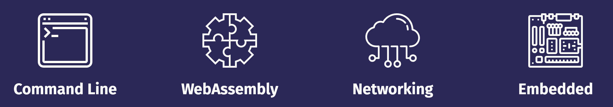
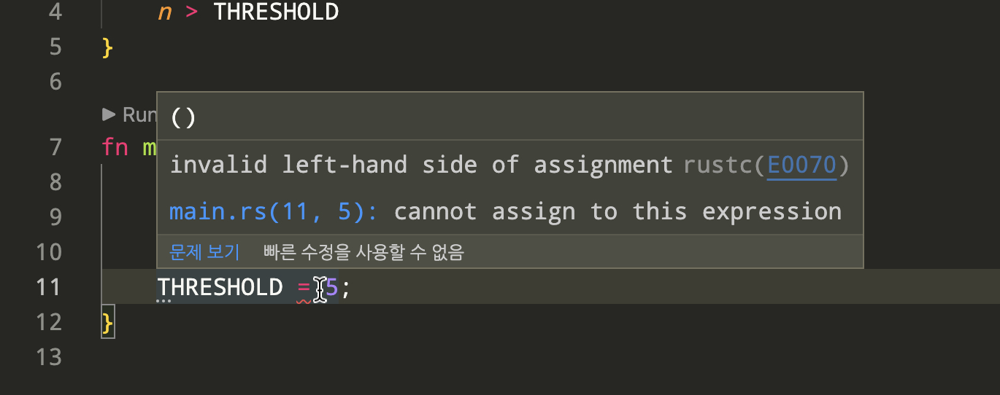
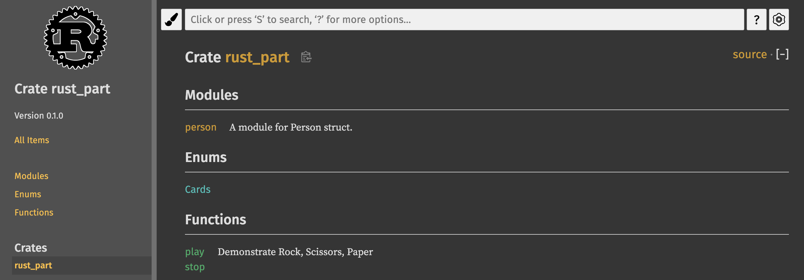

CH1. 러스트 시작하기
가장 사랑받는 언어, 러스트
print("Hello, Pythonista!")
fn main() { println!("Hello, Rustacean!"); }
파이썬은 최근 가장 인기가 높은 언어 중 하나입니다. 간결한 문법과 범용성 덕분에 서버 개발부터 딥러닝 모델 개발까지 다양한 분야에서 사용되고 있습니다. 하지만 파이썬은 개발 시의 높은 생산성을 위해 코드 실행 속도를 포기한 언어입니다. 특히 파이썬의 태생적 한계인 GIL(Global interpreter lock)때문에 빠른 연산이 필요한 작업이나 멀티스레딩 프로그램에서 좋은 성능을 내기 어려운 단점이 있습니다.
러스트는 높은 추상성으로 높은 생산성을 가지고 있는 동시에 C/C++의 99%에 가까운 성능을 가지고 있어서 빠른 연산속도가 필요한 분야에서 각광받고 있습니다. 몇몇 최근 설문 조사 결과를 살펴보면, 2021년 스택오버플로우 개발자 설문조사의 "Loved vs Dreaded(사랑하는 언어 대 두려운 언어)"에서 러스트는 86.98%라는 높은 비율로 가장 사랑받는 언어로 선정되었습니다.

국내에서도 2022 프로그래머스 설문조사에 따르면 러스트는 5.3% 비율로 7위를 차지해 꽤 상위권에 위치해 있는 편입니다.

파이썬 개발자가 러스트를 배워야 하는 이유
왜 국내/외에서 러스트를 배우고 싶어할까요? 그리고 파이썬과 러스트의 어떤 차이점 때문에 파이썬 개발자들이 러스트를 배워야만 할까요?
첫째로, 러스트는 메모리와 스레드 안정성이 보장됩니다. 파이썬에서 멀티스레딩 프로그램을 구현할 때 가장 많이 겪는 문제가 스레드 레이스 조건(race condition)입니다. 러스트만의 독특한 타입 시스템과 소유권(ownership) 모델 덕분에 코드가 컴파일될 때 발생할 수 있는 메모리 혹은 스레드 문제를 미리 찾아낼 수 있기 때문에 훨씬 안정적인 프로그램을 만들 수 있습니다.
둘째로, CPU 연산이 많이 필요한 코드를 러스트로 교체하면 빠르게 동작하는 프로그램을 만들 수 있습니다. 파이썬은 빠르게 코드를 작성할 수 있지만, 인터프리터 언어이기 때문에 다른 컴파일 언어에 비해서 속도가 느릴 수밖에 없습니다. 따라서 많은 계산이 필요한 데이터 분석이나 수치계산 분야에서는 이미 널리 쓰이는 pandas나 numpy와 같은 라이브러리가 C++로 작성되어 있습니다. 이와 비슷하게 파이썬 코드에서 병목 현상이 발생하는 부분을 러스트로 대체한 파이썬 함수나 패키지를 만들면 큰 성능 향상을 노릴 수 있습니다. 러스트와 자주 비교되는 언어인 고(Go)와 다르게, 러스트에는 가비지 콜렉터가 없기 때문에 훨씬 좋은 성능을 내게 됩니다. 이러한 특징 때문에 퍼포먼스가 매우 중요한 서비스에 자주 사용됩니다.
세 번째로, 멀티스레딩 구현이 훨씬 용이해지게 됩니다. 파이썬은 GIL(Global Interpreter Lock) 때문에 멀티스레딩이라 하더라도 한 번에 하나의 코어밖에 사용하지 않습니다. 하지만 러스트를 사용하면 GIL 락이 걸린 순간에 여러 스레드를 사용해 더 빠르게 계산을 완료할 수 있습니다.
마지막으로, 러스트는 문서화가 잘 되어 있습니다. 언어 입문서와 예제 모음집이 공식적으로 제공됩니다. 그리고 매우 친절한 컴파일러가 있습니다. 때로는 컴파일 시에 발생하는 오류에 대해 적절한 해결책을 컴파일러가 제시해 주기도 합니다. 러스트의 내장 패키지 매니저인 Cargo 덕분에 빌드, 테스트, 의존성 관리 등이 매우 간편합니다. 또한 Visual Studio Code와 같은 통합개발환경(Integrated Developement Environment, IDE) 지원이 잘 되어 있어 자동완성, 타입 검사, 포매팅 등을 자연스럽게 사용할 수 있습니다.
이같은 점 때문에 3년 연속 "가장 사랑받는 프로그래밍 언어" 1위를 차지하고 있는 러스트는 더 이상 파이썬 개발자에게 선택이 아닌 필수가 되었습니다.
파이썬과 러스트의 차이점
언어상의 차이
먼저 기본적인 언어상의 차이를 살펴보면 다음과 같습니다.
| 파이썬 | 러스트 |
|---|---|
| 인터프리터 언어 | 컴파일 언어 |
| 강타입 언어이면서 동적 타입 언어 | 강타입 언어이면서 정적 타입 언어 |
| 메모리 관리에 가비지 콜렉터 사용 | 메모리 관리에 소유권 모델 사용 |
| 대부분의 경우 객체지향 프로그래밍 | 함수형 프로그래밍 |
| 스타일 가이드가 유연함 | 명확한 스타일 가이드 존재 |
러스트는 컴파일 언어이기 때문에 파이썬과 다르게 코드가 실행되기 전 컴파일 단계를 거쳐야 합니다. 하지만 이때 대부분의 오류와 버그를 잡아낼 수 있기 때문에 이는 오히려 러스트의 장점이기도 합니다. 파이썬은 객체 지향 프로그래밍 언어이지만, 러스트는 함수형 프로그래밍 언어이기 때문에 파이썬과는 코드 작성 패턴이 조금 다릅니다. 이 책에서는 파이썬 코드와 러스트 코드를 비교하면서 러스트를 설명하기 때문에 두 언어의 유사성과 차이점을 통해 더욱 쉽게 러스트를 배울 수 있습니다.
툴 비교
아래 표는 파이썬과 러스트의 기본 툴들을 비교한 표입니다. 파이썬의 경우, pip 를 제외한 툴들은 일반적으로 별도 설치가 필요합니다. 하지만 러스트는 cargo 라는 툴을 통해 대부분의 기능을 바로 사용할 수 있습니다. cargo는 크레이트(crate)라고 불리는 패키지를 관리하는 도구이면서, 동시에 소스코드를 컴파일하고 빌드하는 시스템 빌드 매니저 기능도 포함하고 있습니다. 아래 표와 같이 cargo 에 내장된 기능은 포맷(format), 린트(lint), 테스트, 문서화, 벤치마크 등 다양합니다. 여기에 추가로 플러그인을 설치해서 더 다양하게 cargo 를 사용할 수도 있습니다.
| 파이썬 | 러스트 | |
|---|---|---|
| 패키지 관리자 | pip | cargo |
| 포매터 | black, yapf, autopep8 | cargo fmt |
| 린터 | pylint, flake8 | cargo clippy |
| 테스트 | pytest | cargo test |
| 프로젝트 환경 관리 | virtualenv, pipenv, pyenv, conda | cargo new |
| 문서화 | sphinx | cargo doc |
| 벤치마크 | cProfile, pyspy | cargo bench |
예를 들어 cargo doc을 실행하면, 아래와 같은 API 문서가 자동으로 생성됩니다. 이와 비슷하게 파이썬 문서를 생성해주는 패키지인 sphinx 의 경우, 별도의 추가 설치 뿐만 아니라 프로젝트 별로 섬세한 설정이 필요하다는 점을 생각해보면 이는 굉장히 편리한 기능입니다.

https://docs.rs/serde_v8/0.49.0/serde_v8/
그러면 러스트는 또 다른 C/C++ 대체 언어인가요?
위에서 잠깐 설명했듯이, 러스트로 C/C++ 바인딩 함수나 패키지를 대신할 수 있습니다. 그렇다면 왜 C/C++로 직접 프로그램을 만들거나, 다른 비슷한 언어들을 사용하지 않는 걸까요? 일단 C/C++는 생산성이 매우 떨어집니다. 숙련된 개발자가 아니라면 C/C++로 프로그램을 만드는 것 자체가 굉장한 부담이 됩니다. 따라서 C/C++와 비슷한 모던 프로그래밍 언어들이 훨씬 각광받고 있습니다.
아래 표는 Rust와 경쟁 관계에 있는 비슷한 언어들의 특징을 정리해놓은 표입니다. 먼저 Apple의 Swift는 컴파일 언어이며, 높은 생산성과 성능을 자랑하지만 주로 iOS 앱 개발에만 사용됩니다. 두 번째로 Go는 높은 생산성과 비교적 빠른 성능을 가지고 있습니다. 주로 네트워크/서버 분야에 많이 사용됩니다. Go는 메모리가 완전히 안전하지 않으며, 컴파일 타임에 이러한 오류를 감지하지 못하는 경우가 많아 안정성이 떨어집니다. 또한 가비지 콜렉션을 사용하기 때문에 러스트에 비해 성능이 떨어지는 단점이 있습니다. 이러한 이유 때문에 빠른 성능과 메모리 안정성이 필요한 경우 러스트가 최고의 옵션이 됩니다.
| Apple | Mozilla | |
|---|---|---|
| Swift | Go | Rust |
| Mainly for iOS apps | Dominant in network/server applications | Dominant in system programming and CPU intensive applications |
| Memory leak still present | Possible memory leak through goroutine | Guarantees no memory leak |
Rust로 뭘 할 수 있나요?
러스트는 파이썬의 성능을 향상시키는 역할 외에도 많은 분야에서 사용되고 있습니다. CLI(Command Line Interface)나 네트워크 분야에서도 사용되고 있습니다. 그 외에 웹 어셈블리(WebAssembly) 분야에서 러스트의 높은 성능 때문에 가장 많이 사용되고 있습니다. 웹 어셈블리란, 브라우저에서 다른 프로그래밍 언어를 실행시킬 수 있는 방법입니다. 즉 기존에 자바스크립트를 사용했을 때 발생하는 성능 저하를 러스트와 웹어셈블리를 사용하면 간단하게 해결할 수 있습니다. 마지막으로 하드웨어의 CPU나 메모리가 매우 제한적인 임베디드 분야에서도 러스트가 각광받고 있습니다. 기존에 C/C++로 작성하던 코드를 러스트로 마이그레이션해 생산성과 안정성이 대폭 향상되게 됩니다.

가장 유명한 러스트 프로젝트로는 암호화폐 솔라나(Solana)가 있습니다. "세계에서 가장 빠른 블록체인"이라는 표어가 보여주듯이 러스트의 성능과 안정성을 잘 이용하고 있는 프로젝트입니다. 솔라나를 이용해 NFT, DeFi 등 다양한 프로젝트가 이어져 나가고 있어서 솔라나는 러스트 생태계에 큰 역할을 하고 있습니다.
이외에도 웹 어플리케이션의 백엔드로 러스트가 사용되기도 합니다. AppFlowy는 러스트로 작성된 노션(Notion) 대체제입니다. 이처럼 러스트는 다양한 분야에서 활용되고 있습니다.
러스트 사용 실제 사례들
러스트는 실제 산업 전반에서 다양하게 사용되고 있습니다. 특히 빠른 계산 성능이 필요한 복잡한 프로그램에서 그 진가를 발휘하고 있습니다. 다음은 여러 유명 IT 회사들에서 러스트를 실제로 사용하고 있는 사례들입니다.
Dropbox
드랍박스는 클라우드 저장소 서비스를 운영하는 회사입니다. 드랍박스에서 가장 핵심적인 기능 중 하나는 로컬 컴퓨터에 있는 데이터를 원격 클라우드에 빠르게 동기화하는 것입니다. 기존에 C++로 작성되어 있었던 동기화 로직을 러스트로 재작성했다고 합니다.
Figma

피그마는 UI 프로토타입을 제작할 수 있는 도구입니다. 웹 기반으로 동작하기 때문에, 화면에 결과를 빠르게 보여주는 것이 중요합니다. 러스트로 서버를 재작성한 결과 비약적인 성능 향상이 있었다고 합니다.
npm
npm은 Node.JS의 패키지 저장소로, 노드 패키지를 다운받으려면 반드시 거쳐야 하는 서비스입니다. 레지스트리 서비스(registry service)의 병목 현상을 해결하기 위해 다양한 프로그래밍 언어를 고려했다고 합니다. Node.JS, Go, Java 등으로 실제 구현도 해보았지만 결과적으로는 러스트가 채택되었습니다.
Discord

디스코드는 기존에 Go로 작성된 서비스 백엔드에서 간헐적인 성능 하락이 발생하는 것을 발견했습니다. 위 그래프에서 보라색이 Go 구현체입니다. 주기적으로 CPU 피크가 발생하고 이때문에 응답시간에도 피크가 발생하는 것을 알 수 있습니다. 이런 현상의 원인은 Go의 가비지 컬렉터 때문으로, 러스트로 재작성한 후 CPU 사용량이 안정화되고, 응답 시간이 훨씬 짧아진 것을 알 수 있습니다.
이외에도 다양한 기업에서 러스트를 도입해 사용하고 있습니다.
- 페이스북에서는 백엔드 서버를 작성하는 언어 중 하나로 러스트를 채택했습니다.
- 러스트의 후원 재단인 모질라에서 개발하는 파이어폭스 브라우저의 엔진(Servo Engine)은 러스트로 작성되었습니다.
- Next.js의 컴파일 엔진은 러스트로 재작성되었습니다.
- AWS(아마존웹서비스)의 Lambda에서 컨테이너는 FireCracker라는 러스트 툴 위에서 실행됩니다.
- Sentry 역시 파이썬의 낮은 퍼포먼스를 러스트를 도입해 해결했습니다.
러스트 개발 환경 설정하기
최신 버전이 나오면 화면 구성이 달라질 수 있어 캡처는 아직 하지 않았습니다.
러스트로 코드를 작성하기 위해, 필요한 도구들을 설치해주어야 합니다. 운영체제별로 설치 방법이 조금씩 다르므로 사용하고 계신 환경에 맞추어 설치하세요.
러스트 툴체인 설치하기
가장 먼저 러스트 언어를 컴파일해주는 컴파일러와 시스템 매니저인 cargo 를 설치합니다. 이 두 가지 도구는 rustup 이라고 하는 툴체인에 포함되어 있기 때문에, rustup만 설치하면 됩니다. 공식 홈페이지 https://rustup.rs/# 로 접속하면 운영체제별 설치 방법을 볼 수 있습니다.
macOS / Linux
맥(macOS) 또는 리눅스 사용자들은 아래 명령어를 통해 간단하게 설치가 가능합니다.
$ curl --proto '=https' --tlsv1.2 https://sh.rustup.rs -sSf | sh
<러스트 설치 캡처>
Windows
윈도우 사용자의 경우 위 홈페이지에서 34비트 또는 64비트 설치 파일을 다운로드 받습니다.
<러스트 설치 캡처>
Visual Studio Code 설치 및 설정하기
이 책에서는 통합 개발 환경(Integrated Development Environment, IDE)로 Visual Studio Code(이하 VSCode)를 사용합니다. 러스트에서 제공하는 컴파일, 디버깅, 언어 서버(Language server) 등의 기능을 쉽고 편리하게 사용할 수 있기 때문에 VSCode를 사용하시는 것을 추천합니다.
운영체제별 VSCode 설치방법
맥/리눅스
윈도우
확장 프로그램(Extension) 설치
rust-analyzer란 러스트 코드를 작성하는데 많은 도움을 주는 확장 프로그램입니다. 코드 자동완성, 에러 표시, 관련 문서 표시 등 다양한 기능이 있지만 가장 좋은 기능 중 하나는 변수의 타입을 추측해서 화면에 표시해주는 것입니다. 자세한 내용을 나중에 소스코드를 작성할 때 다시 살펴보겠습니다.
화면 왼쪽의 블록 모양 버튼을 눌러 확장 프로그램을 설치합니다.
- rust-analyzer
VSCode에서 코드 실행해보기
VSCode를 실행합니다.
메뉴에서 File - Open Folder를 클릭합니다.
프로젝트 폴더를 선택하거나 새로 생성한 다음 선택합니다.
터미널을 실행합니다. 메뉴에서 Terminal - New Terminal
새로운 프로젝트를 현재 폴더에 생성합니다. 터미널에 아래 명령어를 입력하고 실행합니다.
$ cargo init
기본 코드를 컴파일하고, 바이너리를 실행합니다. 러스트에서는 cargo run 명령어로 이 작업을 간단하게 수행할 수 있습니다.
$ cargo run
Compiling temp v0.1.0 (/Users/code/temp)
Finished dev [unoptimized + debuginfo] target(s) in 4.55s
Running `target/debug/temp`
Hello, world!
명령어를 터미널에 입력하면, 먼저 코드가 컴파일되고 바이너리가 실행되는 것을 알 수 있습니다. 바이너리가 실행되어 Hello, world! 가 터미널에 출력됩니다. 이제 모든 개발 환경 준비가 끝났습니다.
rustfmt 사용하기
러스트에는 내장 코드 포맷터인 rustfmt가 설치되어 있습니다. VSCode에서는 단축키를 사용해 코드를 포맷할 수 있습니다. 윈도우 또는 리눅스의 경우는 Alt + Shift + F, 맥의 경우는 Option + Shift + F를 누르면 됩니다. 예를 들어 아래 코드를 main.rs 에 입력하고 포맷을 실행해 보겠습니다.
fn main( ){ println! ( "Please run 'rustfmt!'" ); }
실행 결과
fn main() { println!("Please run 'rustfmt!'"); }
공백 간격, 줄바꿈 등을 rustfmt가 알아서 처리해줍니다. 이처럼 공식적인 공통 포맷터가 존재하기 때문에 어떤 러스트 프로젝트라도 일관적인 소스코드 관리가 가능하다는 것이 러스트의 큰 장점입니다.
파이썬 프로젝트 생성하기
우리는 파이썬 코드와 러스트 코드를 비교하면서 러스트 문법을 배워나갈 것입니다. 따라서 파이썬 프로젝트와 러스트 프로젝트를 같은 폴더 밑에 만들어 두겠습니다. 현재 경로가 /code/temp/라고 했을 때, 하위 폴더로 "python" 폴더를 하나 생성합니다. 그리고 폴더 안에 파이썬 코드가 들어갈 main.py 모듈을 생성합니다. 현재 파일 구조는 다음과 같습니다.
.
└── python
└── main.py
러스트 프로젝트 생성하기
러스트 프로젝트를 시작하는 방법은 두 가지가 있습니다. 첫째, 터미널에서 빈 폴더에서 cargo init 으로 프로젝트를 시작합니다. 이 경우에는 현재 폴더에 러스트 프로젝트가 생성됩니다. 예를 들어, 터미널에서 현재 경로가 /code/temp/ 라고 했을 때, cargo init 을 수행하면 이 폴더가 프로젝트 폴더가 됩니다. 현재 폴더의 파일 목록을 출력하는 ls 명령어를 수행한 결과는 다음과 같습니다.
/code/temp $ ls
Cargo.toml src python
현재 폴더에서 cargo init 으로 프로제그를 생성하는 경우에는 현재 폴더 이름이 프로젝트 이름이 됩니다. 따라서 현재 생성된 프로젝트 이름은 "temp"가 됩니다. 프로젝트 이름을 확인하는 방법은 잠시 후에 Cargo.toml 파일을 설명하면서 다루겠습니다.
두 번째로 cargo new <프로젝트명> 명령어로 프로젝트 이름을 설정해 하위 폴더를 생성하는 방법이 있습니다. 현재 폴더 경로가 동일하게 /code/temp/ 라고 했을 때 다음과 같이 실행해 보겠습니다.
$ cargo new rust_part
그러면 현재 폴더 밑에 "rust_part"라는 폴더가 생성되고, 이 폴더 안에 파일이 생성됩니다.
/code/temp $ ls
rust_part python
강의에서는 두 번째 방법을 사용해 러스트와 파이썬 프로젝트를 사용하겠습니다. 따라서 최종적인 파일 구조는 다음과 같습니다.
.
├── rust_part
│ ├── Cargo.toml
│ └── src
└── python
└── main.py
러스트 폴더 구조
러스트의 프로젝트 폴더에는 다음과 같은 파일 구조가 만들어집니다.
.
├── Cargo.toml
└── src
└── main.rs
먼저 Cargo.toml 파일은 프로젝트의 모든 설정값을 가지고 있는 파일입니다. 파일의 구조는 아래와 같이 생겼습니다.
[package]
name = "rust_part"
version = "0.1.0"
edition = "2021"
# See more keys and their definitions at https://doc.rust-lang.org/cargo/reference/manifest.html
[dependencies]
[package] 부분에는 현재 프로젝트의 이름과 버전, 그리고 러스트 에디션 버전이 들어 있습니다. 러스트 에디션은 현재 연도보다 이전 연도가 들어 있을 수도 있는데, 이는 러스트 버전의 호환성을 위해서 버전을 에디션으로 구분하고 있기 때문에 그렇습니다.
[dependencies] 는 현재 프로젝트에서 설치하는 크레이트(러스트에서는 패키지를 크레이트(crate)라고 부릅니다)의 이름과 버전이 들어가게 됩니다. 나중에 크레이트를 설치할 때 자세히 다루도록 하겠습니다.
src 폴더가 실제 러스트 소스코드가 들어가는 곳입니다. 현재는 코드의 시작 지점(entry point)인 main.rs 파일만 들어 있습니다. 해당 파일에는 main() 함수가 들어 있는데, main.rs 가 컴파일되고 바이너리가 실행될 때 바로 이 main() 함수가 실행됩니다. 따라서 반드시 main.rs 파일이 존재해야 하고, 이 파일 안에 main() 함수가 존재해야 코드가 컴파일되고 실행될 수 있습니다.
fn main() { println!("Hello, world!"); }
현재 main() 함수에서는 "Hello, world!" 라는 문자열을 프린트하는 println! 만 들어있습니다. 이제 소스코드를 컴파일하고 실행시켜 보겠습니다. 위에서 사용했던 cargo run 을 사용합니다.
cargo run
Compiling temp v0.1.0 (/Users/code/temp)
Finished dev [unoptimized + debuginfo] target(s) in 1.70s
Running `target/debug/temp`
Hello, world!
CH2. 변수
이번 장부터는 파이썬과 러스트 코드를 동시에 비교하면서 러스트 언어의 개념들을 설명해 보도록 하겠습니다.
값 출력하기
파이썬에서는 모든 객체를 print 함수로 출력할 수 있습니다. 문자열 "Hello, world!" 를 출력하는 예제는 다음과 같습니다.
print("Hello, world!")
반면 러스트에서는 print 같은 편리한 함수 대신, 매크로(macro)를 사용해 값을 출력합니다. 매크로란 사전 정의된 편리한 기능을 의미하고, 항상 이름 뒤에 !가 붙습니다. 매크로에 대해서는 뒤에서 다시 자세히 설명하겠습니다. 또, 러스트 코드는 매 코드의 마지막에 세미콜론(;) 이 붙습니다. 세미콜론이 없으면 컴파일 에러가 발생하니 주의하세요. 위에서 잠깐 살펴봤듯이 문자열 "Hello, world!" 를 출력하는 예제는 다음과 같습니다.
fn main() { println!("Hello, world!"); }
변수 선언
변수란 메모리에 값을 저장하기 위해 사용되는 개념입니다. 변수의 이름을 통해 메모리에 저장된 값을 참조해서 사용할 수 있습니다. 파이썬은 변수 선언 시 타입을 명시하지 않아도 되기 때문에 실수값과 정수값 모두 변수에 바로 할당이 가능합니다. 파이썬에서 변수 x 와 y 를 선언하고 실수 1.0과 정수 10을 할당한 다음, f-string을 사용해 두 변수의 값을 출력합니다. main.py 에 다음 내용을 입력합니다.
x = 1.0
y = 10
print(f"x = {x}, y = {y}")
파이썬 코드 실행 결과는 다음과 같습니다. 폴더를 하위 폴더인 "python"으로 이동한 다음 코드를 실행해야 합니다.
/code/temp/python $ python main.py
x = 1.0, y = 10
러스트에서는 let 키워드를 사용해 변수를 선언합니다. 그리고 타입을 : 뒤에 명시합니다.
변수명 타입 값
let x: i32 = 10;대부분의 경우에서는 컴파일러가 타입을 추측해주지만, 몇몇 경우에는 직접 타입을 명시해줘야 하기도 합니다. 아래 예제에서는 실수 1.0을 f64 타입으로 선언했지만, 실제로는 변수 y와 같이 명시적으로 타입을 적어주지 않아도 컴파일이 됩니다. 다음으로 prinln! 매크로에서는 문자열의 {} 자리에 변수가 순서대로 들어가 전체 문자열이 완성됩니다.
fn main() { let x: f64 = 1.0; let y = 10; println!("x = {}, y = {}", x, y); }
하위 폴더인 "rust_part" 폴더로 이동한 다음, cargo run 을 실행해 결과를 확인해보겠습니다.
/code/temp/rust_part $ cargo run
x = 1, y = 10
파이썬과 러스트 모두 같은 결과가 나오는 것을 알 수 있습니다.
앞으로 파이썬 코드와 러스트 코드를 동시에 실행해야 하기 때문에, VSCode 터미널의 분할(split) 기능을 사용하면 편리합니다. 터미널을 연 다음, 우측 상단의 "터미널 분할"을 클릭합니다.

그리고 분할된 화면에서 하나는 파이썬 프로젝트를, 나머지는 러스트 프로젝트로 이동해 두면 편리하게 코드를 실행할 수 있습니다.

작명 규칙
파이썬과 러스트의 작명 규칙은 거의 동일합니다. 변수의 경우, 둘 다 스네이크 케이스(snake case)를 사용합니다.
snake_case = 3
let snake_case = 3;참고로 스네이크 케이스란, 모든 단어를 숫자 또는 알파벳 소문자로 작성하고, 단어 구분은 언더바(_)로 합니다. 단 변수명은 반드시 알파벳 소문자로만 시작해야 합니다.
상수의 경우는 둘 다 스크리밍 스네이크 케이스(Screaming snake case)를 사용합니다. 모든 알파벳이 대문자이고, 단어 구분을 언더바로 합니다.
SCREAMING_SNAKE_CASE = 1
러스트에서 상수를 다루는 방법은 뒤에서 자세히 설명하겠습니다. 여기서는 상수의 작명 규칙만 이해하면 충분합니다.
const SCREAMING_SNAKE_CASE: i32 = 1;불변성
러스트에서 변수를 다룰 때, 파이썬에는 없는 두 가지 개념이 있습니다. 러스트의 모든 변수는 기본적으로 불변(immutable)입니다. 파이썬에서는 변수를 선언한 다음 다른 값을 넣는 것이 매우 자유롭습니다. 변수의 타입도 상관 없이 새로운 값을 마음대로 넣을 수 있습니다.
x = 1
x = "2"
x = 3.141592
하지만 러스트에서는 조금 다릅니다. 예를 들어, 아래 코드와 같이 let 키워드로 변수를 선언하고, 해당 변수의 값을 바꾸려고 한다면 컴파일이 되지 않습니다.
fn main() {
let x = 1;
x = 2; // won't compile!
println!("{}", x);
}
위 코드를 실행해보면 다음과 같은 에러가 발생합니다.
error[E0384]: cannot assign twice to immutable variable `x`
--> src/main.rs:3:5
|
2 | let x = 1;
| -
| |
| first assignment to `x`
| help: consider making this binding mutable: `mut x`
3 | x = 2; // won't compile!
| ^^^^^ cannot assign twice to immutable variable
에러의 내용을 읽어보면, 처음 let x=1 로 선언된 변수가 불변(immutable)이기 때문에 값을 두 번 할당할 수 없다고 합니다. 그리고 컴파일러가 "help"에서 문제 해결 방법을 소개하는데, 변수 x 를 가변 변수(mutable)로 다음과 같이 선언하라고 합니다.
let mut x = 1;컴파일러의 조언에 따라 수정된 코드를 아래와 같이 작성하고 실행해봅시다.
fn main() {
let mut x = 1;
x = 2;
println!("{}", x);
}
이제 콘솔에 값 2가 잘 출력되는 것을 알 수 있습니다.
이처럼, 러스트에서는 모든 변수의 값이 불변으로 선언이 됩니다. 따라서 값을 바꾸고자 하는 변수에는 mut 키워드로 가변성을 부여해야 합니다.
섀도잉
한번 선언한 불변 변수의 값을 변경하는 것은 불가능하지만, 변수 자체를 새로 선언하는 것은 가능합니다. 이렇게 변수 이름을 재사용해서 새로운 변수를 다시 선언하는 것을 섀도잉(shadowing)이라고 합니다.
섀도잉을 사용할 경우, mut 키워드 없이도 새로운 값을 변수에 할당할 수 있고, 새로운 변수이기 때문에 타입도 변경할 수 있습니다. 아래 예제에서는 변수 x 에 처음에는 "5" 라는 문자열을 할당했지만, 그 다음에는 섀도잉을 사용해 x에 정수 6을 할당했습니다. 코드를 실행해보면 정상적으로 컴파일됩니다.
fn main() { let x = "5"; let x = 6; // x is redeclared as 6 println!("The value of x is: {}", x); // 6 }
타입
C언어 계열과 마찬가지로, Rust는 타입이 존재합니다. 러스트의 원시 타입(primitive type) 목록은 다음과 같습니다.
| 이름 | 타입 |
|---|---|
| 8비트 정수 | i8 |
| 16비트 정수 | i16 |
| 32비트 정수 | i32 |
| 64비트 정수 | i64 |
| 128비트 정수 | i128 |
| 아키텍처 | isize |
| 부호 없는 8비트 정수 | u8 |
| 부호 없는 16비트 정수 | u16 |
| 부호 없는 32비트 정수 | u32 |
| 부호 없는 64비트 정수 | u64 |
| 부호 없는 128비트 정수 | u128 |
| 부호 없는 아키텍처 | usize |
| 불리언 | bool |
| 문자열 | String |
| 문자열 슬라이스 | str |
| 32비트 부동소수점 실수 | f32 |
| 64비트 부동소수점 실수 | f64 |
여기서 isize 와 usize 는 컴퓨터 아키텍처가 32비트인지 64비트인지에 따라서 값이 달라지는 기본 포인터 크기입니다.
러스트 코드를 작성할 때 대부분의 경우에는 개발자가 변수에 타입을 지정하지 않아도 앞에서 설치한 rust-analyzer가 알아서 타입을 추측(inference)해서 화면에 보여줍니다. 비슷한 원리로 코드가 컴파일될 때에는 컴파일러가 타입을 추측해서 변수를 선언하게 됩니다. 이때, 추측되는 타입의 기본값은 정수형은 i32 , 실수형은 f64 입니다.
다음 코드를 VSCode에 붙여넣으면 아래 그림과 같이 타입이 추론되는 것을 볼 수 있습니다.
fn main(){ let x = 1; let y = 1.0; println!("{} {}", x, y); }

마찬가지로 이 상태로도 컴파일이 잘 실행되고, 컴파일러가 각 변수를 i32 와 f64 로 추측해서 컴파일합니다.
실행결과
1 1
변수의 타입을 다른 타입으로 바꾸는 타입 변환(Casting)도 가능합니다. 파이썬에서는 타입 이름을 바로 사용해 타입 변환을 수행합니다.
x = 1.2
y = int(x)
print(f"{x} -> {y}");
실행결과
1.2 -> 1
러스트에서는 아래와 같이 as 키워드를 사용하면 됩니다. 예제에서는 64비트 실수 f64 로 선언된 변수 x 의 값을 32비트 정수 i32 로 변환해 y 변수에 할당하고 있습니다. 실수에서 정수로 변환했기 때문에 값이 1.2에서 1로 변경됩니다.
fn main() { let x: f64 = 1.2; let y = x as i32; println!("{} -> {}", x, y); }
실행결과
1.2 -> 1
상수
상수(constant)란, 한 번 선언되면 값이 바뀌지 않는 변수를 의미합니다. 먼저 파이썬에서 상수를 다음과 같이 선언해 보겠습니다.
THRESHOLD = 10
def is_big(n: int) -> bool:
return n > THRESHOLD
if __name__ == '__main__':
print(THRESHOLD)
print(is_big(THRESHOLD))
THRESHOLD = 5
실행 결과
10
False
일반적으로 상수는 모듈의 가장 위에 선언합니다. 이렇게 선언하게 되면, 모듈의 모든 범위에서 상수에 접근하는 것이 가능합니다. is_big 이라는 함수 안에서도 상수 THRESHOLD 를 사용할 수 있고, 함수를 실행하는 if 문 안에서도 THRESHOLD 를 사용합니다. 하지만 파이썬의 모든 변수는 기본적으로 가변이기 때문에 위에서 선언한 상수를 변경할 수 있다는 문제가 있습니다.
러스트에서 동일한 내용을 구현해 보겠습니다. 여기서 is_big 이라는 새로운 함수를 선언했는데, 함수의 선언에 대한 자세한 설명은 다음 챕터에서 다룰 예정입니다.
const THRESHOLD: i32 = 10; fn is_big(n: i32) -> bool { n > THRESHOLD } fn main() { println!("{}", THRESHOLD); println!("{}", is_big(5)); }
실행결과
10
false
러스트에서는 상수를 const 키워드로 선언하게 됩니다. 이렇게 선언된 상수는 불변이기 때문에 값을 변경할 수 없습니다. 파이썬에서 상수를 모듈 전체에서 접근할 수 있었던 것처럼, 마찬가지로 러스트에서도 선언된 상수 THRESHOLD 를 함수 is_big 과 main 내부에서 참조하는 것이 가능합니다. 하지만 값이 불변이기 때문에 THRESHOLD = 5;와 같이 새로운 값을 할당하게 되면 오류가 발생합니다.
const THRESHOLD: i32 = 10;
fn is_big(n: i32) -> bool {
n > THRESHOLD
}
fn main() {
println!("{}", THRESHOLD);
println!("{}", is_big(5));
THRESHOLD = 5;
}
실행결과
--> src/main.rs:11:15
|
11 | THRESHOLD = 5;
| --------- ^
| |
| cannot assign to this expression
컴파일러가 친절하게 상수 THRESHOLD 에는 새로운 값을 할당할 수 없다고 알려주게 됩니다. 실행하기 전 편집기 안에서도 빨간 줄로 해당 코드에 문제가 있음을 알려주기 때문에 문제를 빠르게 찾고 해결할 수 있습니다.

CH3. 함수
이전 챕터에서 함수를 선언하고 사용해 보았습니다. 이번 챕터에서는 함수의 선언과 사용에 대해서 자세히 다루겠습니다.
함수 선언
파이썬과 러스트 모두 변수명과 마찬가지로 함수명에 스네이크 케이스를 사용합니다. 함수의 입력으로 정수 두 개를 받은 다음 두 수의 합을 리턴하는 add 라는 함수를 만들어 보겠습니다. 먼저 파이썬 코드는 다음과 같습니다. 여기서 타입 힌트를 사용해 파라미터와 리턴값의 타입을 명시할 수 있습니다. 파라미터 변수 이름 뒤에 :int를 붙여 이 파라미터의 타입이 int임을 명시합니다. 함수에서 리턴하는 값은 함수명 뒤에 -> int와 같이 표기합니다.
def add(num1: int, num2: int) -> int:
return num1 + num2
동일한 기능의 러스트 코드는 다음과 같습니다. 함수의 선언에 fn 키워드를 사용하고, 함수에서 실행할 코드를 중괄호로 묶어줍니다. 그리고 파이썬과 비슷하게 파라미터에는 :i32로 타입을 표기하고, 리턴값에는 -> i32처럼 화살표를 사용해 타입을 명시했습니다. 이때 주의해야 하는 점은 파이썬에서는 타입을 생략할 수 있지만, 러스트에서는 반드시 파라미터와 리턴 타입을 명시해야 한다는 것입니다. 타입이 잘못되거나 표기되지 않았다면 컴파일되지 않습니다.
fn add(num1: i32, num2: i32) -> i32 {
return num1 + num2;
}러스트는 코드 마지막에서 return 키워드를 생략할 수 있습니다. 이때 세미콜론이 없다는 점에 주의하세요. 다음 코드는 위에서 정의한 add 와 완전히 동일합니다.
fn add(num1: i32, num2: i32) -> i32 {
num1 + num2
}이제 add 함수를 메인 함수에서 호출하고 값을 프린트해 보겠습니다.
fn add(num1: i32, num2: i32) -> i32 { num1 + num2 } fn main() { println!("{}", add(1, 2)); }
실행 결과
3
함수의 호출은 파이썬과 동일하게 함수명(파라미터, 파라미터, ...) 와 같이 할 수 있습니다.
이번에는 함수에서 여러 개의 값을 리턴하는 경우를 살펴보겠습니다. 입력받은 두 정수를 순서를 바꿔서 리턴하는 함수를 만들어 보겠습니다. 먼저 파이썬에서 swap 이라는 함수를 아래와 같이 구현합니다. 이렇게 여러 개의 값을 리턴하는 경우, 리턴 타입이 튜플이 됩니다.
def swap(num1: int, num2: int) -> tuple[int, int]:
return num2, num1
num1, num2 = swap(1, 2)
print(f"{num1}, {num2}")
실행 결과
2, 1
이번에는 러스트 코드입니다. 러스트도 여러 개의 값을 리턴하는 경우, 값들이 튜플로 묶이게 됩니다. 따라서 리턴하는 두 정수를 소괄호로 묶어서 (num2, num1) 과 같이 튜플임을 표시합니다. 따라서 함수의 리턴 타입도 튜플로 (i32, i32) 표기합니다.
fn swap(num1: i32, num2: i32) -> (i32, i32) { (num2, num1) } fn main() { let (num1, num2) = swap(1, 2); println!("{num1}, {num2}"); }
실행 결과
2, 1
러스트의 튜플에 관해서는 자료구조 챕터에서 자세히 다루겠습니다.
만일 main 함수와 같이, 함수에서 리턴하는 값이 없는 경우에는 리턴 타입을 생략하거나 ()와 같이 아무 것도 리턴하지 않음을 표기할 수 있습니다. 파이썬에서 아무것도 리턴하지 않는 경우, -> None 으로 표기하거나 표기를 생략하는 것과 비슷합니다.
fn do_nothing() -> () { return (); } fn me_too() {} fn main() { println!("{:?}", do_nothing()); println!("{:?}", me_too()); }
스코프
스코프(scope)란 변수에 접근할 수 있는 범위를 의미합니다. 먼저 파이썬에서는 스코프를 기본적으로 함수 단위로 구분합니다.
실제로는 파이썬은 LEGB 룰이라고 불리는 좀더 복잡한 스코프 규칙을 가지고 있지만, 여기서는 단순화해서 함수 기준으로 설명합니다.
def hello(name: str):
num = 3
print(f"Hello {name}")
if __name__ == '__main__':
my_name = "buzzi"
if True:
print("My name is", my_name)
my_name = "mellon"
hello(my_name)
# print(num) # error
실행 결과
My name is buzzi
Hello mellon
코드 실행 부분을 먼저 보면, my_name 변수에 "buzzi" 라는 문자열을 할당합니다. 그 다음 if 문에서 변수 값을 프린트해보면 "buzzi"가 프린트됩니다. 하지만 그 다음 라인에서 my_name = "mellon" 으로 변수의 값을 바꿔 버렸습니다. 파이썬은 스코프를 함수 단위로만 구분하고 있기 때문에 이제 코드 전체에서 값이 바뀌게 됩니다. 따라서 hello(my_name)의 출력은 Hello mellon이 됩니다. 마지막으로 # print(num) # error를 주석 해제하고 실행해 보면 에러가 발생합니다. hello 함수 안에서 선언된 num 이라는 변수를 프린트하기 때문입니다. 즉, num 의 스코프가 hello 함수이기 때문에 함수 바깥에서 참조할 수 없는 것입니다.
이번에는 러스트의 스코프를 살펴보겠습니다.
fn hello(name: String) { let num = 3; println!("Hello {}", name); } fn main() { let my_name = "buzzi".to_string(); { println!("My name is {}", my_name); let my_name = "mellon"; } hello(my_name); // println!("{}", num); // error }
실행 결과
My name is buzzi
Hello buzzi
러스트에서는 스코프를 중괄호 "{}" 기준으로 구분합니다. 먼저 my_name 변수를 "buzzi"로 할당했습니다. 그 다음, 중괄호 안에서 my_name 을 프린트해보면 "buzzi"가 프린트됩니다. 중괄호 안에서 my_name 을 "mellon"으로 할당하더라도, 중괄호를 벗어나면 중괄호 안에서 선언된 my_name 의 스코프가 끝나게 되므로 중괄호 바깥에서는 my_name 의 값은 원래대로 "buzzi"가 됩니다. 따라서 hello(my_name)의 실행 결과는 "Hello buzzi"가 됩니다. 파이썬에서와 마찬가지로, hello 안에서 선언된 변수인 num은 함수 바깥에서 참조할 수 없기 때문에 println!("{}", num); 을 주석 해제한 다음 코드를 실행하면 에러가 발생합니다. 러스트의 스코프는 나중에 배울 소유권 모델과 밀접한 연관이 있기 때문에 중괄호를 기준으로 스코프가 변경된다는 사실을 꼭 기억해 두세요.
러스트의 주석은
//로 표기합니다.
익명 함수
익명 함수란 이름이 없는 함수라는 뜻으로, 프로그램 내에서 변수에 할당하거나 다른 함수에 파라미터로 전달되는 함수입니다. 따라서 익명 함수를 먼저 만들어 놓고 나중에 함수를 실행할 수 있습니다.
파이썬에서는 익명 함수를 람다 함수(Lambda function)이라고 부릅니다. lambda 키워드를 쓰고, 파라미터: 리턴값 형식으로 함수의 내용을 정의합니다. 이렇게 만든 람다 함수를 변수 my_func 에 할당해 두었다가 print 함수 안에서 호출하는 예제입니다.
my_func = lambda x: x + 1
print(my_func(3))
실행 결과
4
위 예제처럼 람다 함수는 다른 함수에 파라미터로 전달하는 것이 가능합니다. 러스트에도 람다 함수와 비슷한 개념이 있는데 바로 클로저(Closure)입니다. 위에서 만든 람다 함수와 동일한 기능을 하는 클로저를 만들어 보겠습니다. 클로저는 파라미터를 | | 의 사이에 선언하고, 그 뒤에 함수에서 리턴하는 부분을 작성합니다.
fn main() { let my_func = |x| x + 1; println!("{}", my_func(3)); }
실행 결과
4
이때 컴파일러가 클로저의 파라미터와 리턴값의 타입을 i32로 추측해서 보여줍니다. 이는 실제 함수가 실행되는 부분인 my_func(3)로부터 변수 x의 타입을 알 수 있기 때문입니다. 이처럼 클로저는 함수와 다르게 타입을 명시할 필요가 없이 컴파일러가 타입을 추론하도록 할 수 있습니다. 하지만 타입을 명시하는 것도 가능합니다.
fn main() { let my_func = |x: i32| -> i32 { x + 1 }; println!("{}", my_func(3)); }
타입을 명시해야 하는 경우, 함수 실행 부분을 중괄호로 묶어 주어야 합니다.
람다 함수는 반드시 한 줄로만 작성해야 하지만, 클로저는 중괄호로 묶어주는 경우 여러 줄을 작성할 수 있습니다. 위 코드를 하나의 클로저로 바꿔 보겠습니다. 이때 입력받은 변수 x의 값을 바꾸기 위해 가변으로 선언하고, 첫 번째 줄에서 x에 1을 더해줍니다. 그 다음 x를 프린트합니다. 이제 my_func를 호출하면 동일하게 4가 출력됩니다.
fn main() { let my_func = |mut x: i32| { x = x + 1; println!("{}", x); }; my_func(3); }
참고로 파이썬과는 다르게 클로저의 재귀 호출은 아직 지원되지 않습니다. 파이썬에서 클로저를 이용해 피보나치 수를 계산하는 예제는 다음과 같습니다.
def fibonacci(n):
cache = {}
def fib(n):
if n in cache:
return cache[n]
if n < 2:
return n
cache[n] = fib(n - 1) + fib(n - 2)
return cache[n]
return fib(n)
fibonacci(10)
동일한 로직을 구현한 러스트 코드는 클로저가 자기 자신을 부를 수 없기 때문에 컴파일되지 않습니다.
fn fib(n: u32) -> u32 {
let cache = vec![0, 1];
let _fib = |n| {
if n < cache.len() {
cache[n]
} else {
let result = _fib(n - 1) + _fib(n - 2);
cache.push(result);
result
}
};
_fib(n)
}
fn main() {
println!("{}", fib(10));
}
CH4. 흐름제어
다음은 프로그램의 논리적 흐름을 결정할 수 있는 흐름제어문(control flow)에 대해서 알아보겠습니다.
if/else
if 문은 어떤 조건을 만족하는 경우, 그에 해당하는 코드를 실행하도록 논리적 분기를 만드는 방법입니다. 만일 조건이 만족되지 않으면 해당 분기의 코드는 실행되지 않고 넘어갑니다. 보통 if 문은 첫 번째 조건을 검사하는 부분인 if 와, 그 다음 조건을 만족하는지를 검사하는 else if , 그리고 모두 해당되지 않는 경우에 실행되는 else 로 구성됩니다.
파이썬에서 if문을 구현하면 다음과 같습니다. 항상 if 문은 if 라는 키워드로 시작합니다. 여기서는 변수 x 가 y 보다 작은지를 검사하고 있는데, x 는 1.0이고 y가 10이기 때문에 조건이 만족됩니다. 조건이 만족되는 경우에는 아래에 있는 다른 조건들은 검사하지 않고 넘어가기 때문에 실행 결과는 "x is less than y" 가 출력됩니다.
x = 1.0
y = 10
if x < y:
print("x is less than y")
elif x == y:
print("x is equal to y")
else:
print("x is not less than y")
실행 결과
x is less than y
만일 x의 값을 10으로 수정하고 다시 실행한다면 이번에는 "x is equal to y"가 출력될 것입니다.
러스트에서 동일한 코드를 작성해 보겠습니다. 여기서 몇 가지 다른 점이 있는데, 첫 번째로 x와 y를 조건문에서 바로 비교할 수 없습니다. 왜냐하면 두 변수의 타입이 다르기 때문에 둘 중 하나를 나머지의 타입으로 변환해 주어야 하기 때문입니다. 여기서는 y를 f64로 타입 변환을 해서 두 값을 비교하고 있습니다. 두 번째로는 파이썬의 elif가 else if 로 바뀐 것입니다. 세 번째는 러스트는 스코프를 중괄호로 구분하고 있기 때문에, if문의 각 분기에 해당하는 코드를 중괄호로 묶어주고 있습니다.
fn main() { let x = 1.0; let y = 10; if x < (y as f64) { // casting println!("x is less than y"); } else if x == (y as f64) { println!("x is equal to y"); } else { println!("x is not less than y"); } }
실행 결과
x is less than y
실행 결과는 파이썬과 동일합니다.
let if
러스트에서는 if문의 각 분기를 변수에 바로 할당하는 것이 가능합니다. 방금 보았던 if문을 아래와 같이 바꿀 수 있습니다. 각 분기에서 문자열을 프린트했었는데, 프린트가 사라졌고 각 분기의 마지막에 붙어있던 세미콜론도 사라졌습니다. 그 다음 if문 전체를 result 라는 변수에다가 할당하고 있습니다.
fn main() { let x = 1.0; let y = 10; let result = if x < (y as f64) { "x is less than y" } else if x == (y as f64) { "x is equal to y" } else { "x is not less than y" }; println!("{}", result); }
실행 결과
x is less than y
실행 결과를 확인해보면 이전과 동일합니다. 그 이유는 if문의 각 분기에 해당하는 문자열들이 result 변수에 할당되기 때문인데, 위 코드에서는 첫 번째 조건인 x < (y as f64)가 만족되기 때문에, 결국 위 if문은 아래와 동일합니다.
let result = "x is less than y";주의해야 하는 점은 위처럼 let if 문을 쓰려면 각 분기에서 할당하는 값들이 모두 동일한 타입이어야 한다는 것입니다.
for
for을 사용하면 값들의 모음(collection)에서 각 값들을 순서대로 꺼낼 수 있습니다. 이처럼 값들을 순서대로 꺼내는 것을 순회(loop over)한다고 말합니다.
6부터 9까지의 정수를 순서대로 프린트하는 코드를 작성해 보겠습니다. 먼저 파이썬에서는 range를 사용하면 됩니다. 이때 range는 마지막 값은 생략되므로 range(6, 10) 과 같이 입력해야 합니다. 이때 print 함수에 end=","를 넣어 줄바꿈 대신 콤마가 들어가도록 해서 결과가 한줄로 출력되도록 했습니다.
for i in range(6, 10):
print(i, end=",")
실행 결과
6,7,8,9,
러스트에서는 특정 범위의 정수를 a..b 와 같은 문법으로 간단하게 만들 수 있습니다. 마찬가지로 마지막 값은 생략되기 때문에 6..10과 같이 입력합니다. 결과를 한 줄로 프린트하기 위해서 println! 대신 print! 함수를 사용합니다.
fn main() { for i in 6..10 { print!("{},", i); } }
실행 결과
6,7,8,9,
파이썬에서 range를 변수에 할당했다가 나중에 for 로 반복할 수 있습니다.
num_range = range(6, 10)
for i in num_range:
print(i, end=",")
마찬가지로 러스트에서도 정수 범위를 변수에 할당해 두었다가 나중에 반복할 수 있습니다.
fn main() { let num_range = 6..10; for i in num_range { print!("{},", i); } }
러스트에서 for 를 사용해 반복할 수 있는 타입에 대해서는 뒤에서 자세히 다루겠습니다.
while
while 문은 조건이 만족되는 동안 코드가 계속 반복해서 실행됩니다. 만일 조건이 만족되지 않으면 코드가 실행되지 않고 반복이 종료됩니다. 파이썬에서 while문을 사용해 0부터 4까지의 정수를 프린트하는 코드를 작성해 보겠습니다.
x = 0
while x < 5:
print(x, end=",")
x += 1
실행 결과
0,1,2,3,4,
동일한 코드를 러스트로 작성해 보겠습니다. 중괄호가 들어간 것 말고는 크게 다른 점이 없습니다. 참고로, 러스트는 파이썬과 마찬가지로 증감 연산자(++, --)가 없어 변수의 값을 직접 증가시키거나 감소시켜야 합니다.
fn main() { let mut x = 0; while x < 5 { print!("{},", x); x += 1; // no incremental operator: x++ } }
실행 결과
0,1,2,3,4,
loop
이번에는 러스트의 특별하고 강력한 문법인 loop 를 알아보겠습니다. 먼저 loop 중 무한 루프의 경우는 파이썬에서 아래와 같이 구현 가능합니다. 중간에 x의 값이 5가 되면 break를 통해서 루프를 탈출할 수 있습니다.
x = 0
while True:
x += 1
if x == 5:
break
print(x, end=",")
실행 결과
0,1,2,3,4,
loop는 파이썬의 무한 루프와 동일한 역할을 합니다. 따라서 루프를 종료하는 break 에 해당하는 조건문이 있어야 루프를 종료하고 다음으로 진행할 수 있습니다.
fn main() { let mut x = 0; loop { x += 1; if x == 5 { break; } print!("{},", x); } }
실행 결과
0,1,2,3,4,
loop는 조건이 만족되면 루프를 탈출하는데, 이때 특정 값을 리턴할 수 있습니다. break 뒤에 리턴할 값을 넣어주면 됩니다. x가 5가 됐을 때 x를 리턴하도록 코드를 고치면 다음과 같습니다.
fn main() { let mut x = 0; let y = loop { x += 1; if x == 5 { break x; } print!("{},", x); }; println!("{}", y); }
실행 결과
1,2,3,4,5
루프 안에서 1부터 4까지가 출력되고, 그 뒤에 y의 값 5가 출력됩니다.
match
다음은 다른 언어에서는 switch ... case 로 많이 사용되는 match 입니다. 파이썬에는 동일한 문법이 없으므로 if ... else 문으로 구현해 보겠습니다.
파이썬에서는 최신 버전인 3.10 이후부터
match ... case가 추가되었습니다.
아래 코드는 name 변수에 값에 따라서 서로 다른 결과를 출력하는 코드입니다. 현재 name 변수의 값이 "John" 이므로 "Hello, John!"가 출력됩니다.
name = "John"
if name == "John":
print("Hello, John!")
elif name == "Mary":
print("Hello, Mary!")
else:
print("Hello, stranger!")
실행 결과
Hello, John!
이렇게 특정 변수의 값에 따라서 다른 행동을 하도록 하는 것이 match 문의 핵심입니다. match 뒤에 값을 비교할 변수를 입력하고, 중괄호 안에서 콤마로 각 경우를 구분해서 표기합니다. name 변수가 "John"인 경우, "Mary"인 경우, 그리고 나머지 모든 경우의 세 가지 경우의 수가 있습니다. 나머지 경우를 나타내기 위해서 매칭할 값을 생략하는 _을 사용합니다. 여기서 name 변수의 값이 "John"이기 때문에 "Hello, John!"이 출력됩니다.
fn main() { let name = "John"; match name { "John" => println!("Hello, John!"), "Mary" => println!("Hello, Mary!"), _ => println!("Hello, stranger!"), } }
실행 결과
Hello, John!
loop와 마찬가지로 match 문도 값을 리턴할 수 있습니다. let <변수명> = match ...와 같이 선언하면 됩니다. 이때 컴파일러가 match문의 리턴값으로부터 변수 greet의 타입을 추론합니다. 또한, 각 조건마다 리턴하는 값들의 타입이 반드시 동일해야 합니다.
fn main() { let name = "John"; let greet = match name { "John" => "Hello, John!", "Mary" => "Hello, Mary!", _ => "Hello, stranger!", }; println!("{}", greet); }
실행 결과
Hello, John!
CH5. 소유권
메모리 관리
모든 프로그램은 컴퓨터의 메모리(Memory)라고 하는 자원을 사용합니다. 이 메모리에 프로그램에서 사용하는 데이터를 저장하기 때문입니다. 우리가 코드상에서 어떤 변수에 값을 할당하면 메모리에 그 값이 저장됩니다. 메모리라는 자원은 한정되어 있기 때문에 프로그래밍 언어들은 각자의 방식으로 이 메모리를 효율적으로 관리하고자 노력합니다. 파이썬이나 고와 같은 언어는 가비지 콜렉터를 이용해 언어 차원에서 자동으로 메모리를 관리하고, C/C++같은 언어들은 개발자가 직접 메모리를 관리합니다.
파이썬은 모든 객체의 데이터를 힙 영역에 저장합니다. 그리고 메모리를 가비지 콜렉션을 이용해 관리합니다. 즉, 런타임에 사용되지 않는 객체가 있으면 주기적으로 객체를 삭제하거나 메모리 사용량이 너무 높은 경우 가비지 콜렉션을 수행합니다. 가비지 콜렉션이 수행되는 동안에는 다른 파이썬 코드가 실행될 수 없기 때문에 파이썬의 코드 실행 속도가 느려지는 원인이 됩니다. 또한 어떤 객체가 언제 메모리에서 할당 해제되는지를 개발자가 명시적으로 알 수 있는 방법이 없고 가비지 콜렉터가 이를 전담하기 때문에 프로그램이 불필요하게 많은 메모리를 사용할 가능성도 있습니다.
반면 러스트는 소유권(Ownership)이라는 개념을 통해 메모리를 관리합니다. 소유권 모델 덕분에 러스트 프로그램은 메모리 안전성과 스레드 안전성이 보장됩니다. 메모리 안전성이란, 하나의 값에 대해서 단 하나의 코드만 접근하기 때문에 예상치 못하게 값이 변경되는 일이 없다는 의미입니다. C/C++같은 언어에서는 잘못된 포인터 사용이나 잘못된 메모리 접근과 같은 이유로 버그가 발생하거나 메모리 누수가 일어나기도 하지만 러스트에서는 이를 걱정할 필요가 없습니다. 다음으로 스레드 안전성이란, 여러 개의 스레드에서 하나의 값에 접근하고자 할 때 발생할 수 있는 경합 조건(Race condition)이나 데드락(Deadlock)이 발생하지 않는다는 의미입니다. 이 두 가지 문제가 멀티스레딩 프로그램을 만들 때 가장 어렵고 복잡한 문제이지만 러스트에서는 이를 컴파일 타임에 탐지할 수 있기 때문에 안정성이 보장됩니다.
스택과 힙
소유권에 대해서 알아보기 전에, 프로그램에서 메모리를 저장하는 영역인 스택과 힙에 대해서 살펴보겠습니다. 스택 영역은 함수가 실행될 때 사용하는 메모리 공간으로, 함수에서 사용하는 지역 변수가 스택에 저장됩니다. 일반적으로 스택에서 사용될 메모리 공간이 미리 정해지기 때문에 매우 빠르게 값을 저장하고 접근할 수 있습니다. 만일 함수 실행이 종료되면 스택 영역에서 사용된 모든 지역 변수는 메모리에서 삭제됩니다. 힙 영역은 동적으로 할당되는 메모리를 위해 존재하는 공간으로, 개발자가 명시적으로 특정 크기의 메모리 공간을 사용하겠다고 선언해야 합니다. 만일 해당 메모리 공간이 더 이상 필요하지 않은 경우에는 해당 메모리를 할당 해제해주어야 합니다. 왜냐하면 이미 점유된 메모리 공간은 다른 프로그램이나 스레드에서 사용할 수 없기 때문입니다.
파이썬은 스택을 사용하지 않고 모든 객체를 힙 영역에 저장합니다. 이렇게 저장된 객체들은 파이썬에서 가비지 콜렉션을 통해 메모리를 관리하기 때문에 파이썬을 사용할 때는 메모리 관리에 신경쓰지 않아도 됩니다. 위에서 힙 영역에 대해서 설명할 때 언급한 개발자가 할당하고 할당 해제하는 메모리를 파이썬의 가비지 콜렉터가 대신해주는 것입니다.
반면 러스트는 스택 영역과 힙 영역 모두를 사용합니다. 러스트는 기본적으로 아래와 같이 함수에서 사용하는 모든 값을 제한된 크기의 스택 영역에 저장합니다. 따라서 함수 호출이 종료되면 지역 변수 foo 와 var는 모두 삭제됩니다.
fn foo() {
let foo = "foo";
let var = 5;
}힙 영역은 함수에서 명시적으로 선언하는 경우에만 사용되는데, 힙 영역에 저장하는 값은 전역적으로(globally) 접근이 가능합니다. 나중에 배울 Box 타입을 사용해 선언하면 됩니다.
fn main() { let num = Box::new(1); }
정리하자면, 함수에서 사용하는 지역 변수의 값들은 모두 스택 영역에 저장되고, 전역적으로 사용되는 값들은 힙 영역에 저장됩니다. 참고로 뒤에서 배울 멀티스레딩에서 여러 스레드가 접근하는 변수의 값은 힙 영역에 저장되게 됩니다.
소유권 규칙 자세히 알아보기
소유권을 요약하자면 다음 세 가지 규칙으로 정리할 수 있습니다.
- 모든 "값"들은 해당 값을 "소유"하고 있는 소유자(Owner)가 존재합니다.
- 한 번에 하나의 소유자만 존재할 수 있습니다. 하나의 값에 두 개의 소유자가 동시에 존재할 수 없습니다.
- 소유자가 현재 코드의 스코프에서 벗어나면, 값은 메모리에서 할당 해제됩니다.
안타깝게도 소유권 모델은 파이썬 뿐만 아니라 다른 프로그래밍 언어에는 없는 러스트만의 고유한 특징이기 때문에, 여기서 파이썬과 비교하며 소유권을 설명하기는 조금 어렵습니다.
값에 대한 소유권
프로그래밍에서 메모리 관리가 필요한 이유는 더이상 사용되지 않는 "값"을 처리하지 않으면 스택과 힙 메모리 영역이 가득 차기 때문입니다. 러스트에서는 어떤 값이 더이상 사용되지 않는지를 소유권을 사용해 판단합니다. 모든 값에 소유자를 지정하고, 이 값을 소유하고 있는 소유자가 없게 되면 즉시 값이 메모리에서 할당 해제되는 원리입니다. 아래 예제를 보겠습니다.
fn main() { let x = 1; // x is dropped }
이 예제에서, x 라는 변수에 담긴 1 이라는 값은 main() 함수를 벗어나게 되면 더 이상 사용되지 않습니다. 따라서 x 는 즉시 메모리에서 지워지게 됩니다. 마찬가지로 같은 함수 내에서라도 스코프를 벗어나면 즉시 값은 사라집니다.
fn main() {
let x = 1;
{
let y = x;
println!("{} {}", x, y);
// y is dropped
}
println!("{} {}", x, y); // This line won't compile
// x is dropped
}
이번엔 코드 중간에 있는 {} 에 의해 스코프가 추가되었고, 이 안에서 y가 선언되었습니다. 이 스코프를 벗어나면 y는 더이상 사용되지 않으므로 즉시 할당 해제됩니다. 마찬가지로 함수에 파라미터로 변수를 전달하는 경우에도 같은 원리가 적용됩니다. 여기서 String::from("Hello")는 러스트에서 문자열을 선언하는 방법으로, 문자열에 대한 자세한 내용은 다음 챕터에서 설명하겠습니다.
fn dummy(x: String) {
println!("{}", x);
// x is dropped
}
fn main() {
let x = String::from("Hello");
dummy(x);
println!("{}", x); // This line won't compile
}
함수 dummy 에 문자열이 전달된 다음, 함수를 벗어나면 그 즉시 x 는 할당 해제됩니다. 그런데 이미 할당 해제된 x를 9번 라인에서 참조하고 있기 때문에 오류가 발생합니다. 그러면 모든 값은 다른 함수에 전달하면 영원히 사용하지 못하는 걸까요? 이런 경우 사용할 수 있는 두 가지 방법이 있습니다.
소유권 돌려주기
먼저 함수에서 해당 변수의 소유권을 되돌려줄 수 있는 방법이 있습니다. 아래 예제를 보겠습니다.
fn dummy(x: String) -> String { println!("{}", x); x } fn main() { let x = String::from("Hello"); let x = dummy(x); println!("{}", x); }
실행 결과
Hello
Hello
함수 dummy에서 입력 변수 x는 함수 내부에서 사용된 다음 리턴됩니다. 그 다음 함수의 리턴값을 재선언한 변수 x에 할당함으로써 소유권이 x로 되돌아옵니다. 좀더 이해하기 쉽도록 변수명을 아래와 같이 바꿔보겠습니다. 결론적으로, "Hello"라는 값을 소유하고 있는 변수만 x → y → z 순서로 바뀌고, 값은 그대로 있게 됩니다. 하지만 이 방법은 매번 함수의 리턴값을 변수로 재선언해주어야 하기 때문에 코드의 가독성이 떨어지고, 값이 어느 변수로 이동하는지를 알기 어려운 단점이 있습니다.
fn dummy(y: String) -> String { println!("{}", y); y } fn main() { let x = String::from("Hello"); let z = dummy(x); println!("{}", z); }
실행 결과
Hello
Hello
레퍼런스와 소유권 빌리기
러스트에는 값의 소유권을 잠시 빌려줄 수 있는 개념인 대여(borrow)가 있습니다. 변수 앞에 & 키워드를 사용하면 되는데, 해당 변수의 레퍼런스(reference)를 선언한다는 의미입니다. 레퍼런스란 소유권을 가져가지 않고 해당 값을 참조할 수 있는 방법입니다. 아래 예제를 보겠습니다.
fn main() { let x = String::from("Hello"); let y = &x; println!("{} {}", x, y); }
실행 결과
Hello Hello
let y = &x;와 같이 선언하더라도 문자열 "Hello"의 값의 소유권은 여전히 x에 있고, y는 단순히 값을 참조만 합니다. 따라서 마지막에서 변수 x와 y를 모두 프린트해도 에러가 발생하지 않습니다.
아래 예제에서 dummy 함수의 파라미터 타입은 &String으로, 문자열의 레퍼런스 타입을 의미합니다. main함수에서 dummy를 실행할 때, 변수 x의 레퍼런스인 &x 가 전달되었습니다. 이건 소유권을 잠시 함수 내부의 y 파라미터에 빌려준다는 의미입니다. 소유권을 대여한 변수가 dummy함수의 스코프를 벗어나면, 그 즉시 소유권은 원래 소유자인 x 에게 되돌아갑니다. 따라서 dummy 함수에서 x에 저장된 문자열 값을 사용하더라도 이후에 x를 통해 문자열을 계속 사용할 수 있게 됩니다. 그래서 마지막에 x를 프린트해도 에러가 발생하지 않고 잘 컴파일됩니다.
fn dummy(y: &String) { println!("{}", y); // ownership returns to `x` } fn main() { let x = String::from("Hello"); dummy(&x); println!("{}", x); }
실행 결과
Hello
가변 레퍼런스
어떤 변수의 레퍼런스를 만들 때, 원래 변수가 불변이라면 레퍼런스를 사용해 원래 변수의 값을 바꿀 수 없습니다. 아래 예제에서는 변수 x를 함수 dummy에 레퍼런스로 전달합니다. 그리고 push_str 함수를 사용해 " world!"라는 문자열을 x의 뒤에 추가하고 있습니다. 그런데 코드를 실행하면 에러가 발생합니다.
fn dummy(y: &String) {
y.push_str(" world!");
println!("{}", y);
// ownership returns to `x`
}
fn main() {
let x = String::from("Hello");
dummy(&x);
println!("{}", x);
}
실행 결과
Compiling rust_part v0.1.0 (/Users/code/temp/rust_part)
error[E0596]: cannot borrow `*y` as mutable, as it is behind a `&` reference
--> src/main.rs:2:5
|
1 | fn dummy(y: &String) {
| ------- help: consider changing this to be a mutable reference: `&mut String`
2 | y.push_str(" world!");
| ^^^^^^^^^^^^^^^^^^^^^ `y` is a `&` reference, so the data it refers to cannot be borrowed as mutable
에러 내용을 읽어보면 y에서 소유권을 빌려왔지만, 가변 레퍼런스가 아니기 때문에 값을 수정할 수 없다고 합니다. 컴파일러의 조언에 따라서 y를 가변 레퍼런스로 수정해 보겠습니다. 여기서 총 3군데를 수정했습니다.
dummy함수의 파라미터y의 타입이&mut String으로 변경- 변수
x를 가변 변수로 선언 dummy함수에x를 전달할 때 가변 레퍼런스&mut x로 전달
fn dummy(y: &mut String) { y.push_str(" world!"); println!("{}", y); // ownership returns to `x` } fn main() { let mut x = String::from("Hello"); dummy(&mut x); println!("{}", x); }
실행 결과
Hello world!
Hello world!
가변 레퍼런스를 사용할 때 주의해야 하는 점은 소유권 규칙의 두 번째 규칙인 "한 번에 하나의 소유자만 존재할 수 있다" 입니다. 예를 들어 하나의 값에 대해서 두 개의 가변 레퍼런스를 만들어 보겠습니다. 변수 y와 z는 모두 변수 x의 가변 레퍼런스입니다.
fn main() {
let mut x = String::from("Hello");
let y = &mut x;
let z = &mut x;
println!("{} {}", y, z);
}
실행 결과
Compiling rust_part v0.1.0 (/Users/code/temp/rust_part)
error[E0499]: cannot borrow `x` as mutable more than once at a time
--> src/main.rs:4:13
|
3 | let y = &mut x;
| ------ first mutable borrow occurs here
4 | let z = &mut x;
| ^^^^^^ second mutable borrow occurs here
5 |
6 | println!("{} {}", y, z);
| - first borrow later used here
실행 시 에러가 발생하는데, 변수 x의 소유권을 한 번 이상 대여할 수 없다고 합니다. 만일 하나의 소유권을 여러 개의 변수가 빌릴 수 있다면 큰 문제가 발생할 가능성이 있습니다. 하나의 메모리를 여러 곳에서 접근할 수 있기 때문에 버그가 발생할 수 있습니다. 예를 들어 어떤 가변 레퍼런스에서 값을 변경했는데, 다른 곳에서는 변경 전의 값을 필요로 한다면 예상치 못한 결과가 나올 수 있습니다. 따라서 러스트에서는 하나의 값에 대한 여러 개의 가변 레퍼런스를 허용하지 않습니다. 하지만 단순히 레퍼런스를 여러 개 만드는 것은 문제가 없습니다.
fn main() { let x = String::from("Hello"); let y = &x; let z = &x; println!("{} {}", y, z); }
실행 결과
Hello Hello
러스트의 소유권 개념은 처음 러스트를 배우는 사람의 입장에서 정말 어렵고 복잡하게 느껴집니다. 그렇지만 컴파일러가 소유권 규칙이 위반되는 경우, 에러를 발생시키고 그에 대한 해결책을 제시해주기 때문에 생각보다 금방 익숙해질 수 있습니다.
클로저와 소유권
앞에서 클로저를 단순히 익명 함수라고만 설명하고 넘어갔습니다. 하지만 이제 스코프와 소유권을 배웠기 때문에, 클로저에 대해 좀더 자세한 얘기를 해보려고 합니다. 클로저의 가장 큰 특징은 익명 함수를 만들고 이를 변수에 저장하거나 다른 함수의 인자로 전달할 수 있다는 것입니다.
클로저의 환경 캡처
클로저는 클로저가 선언된 스코프에 있는 지역 변수를 자신의 함수 내부에서 사용할 수 있는데, 이를 환경 캡처(Environment capture)라고 부릅니다. 클로저가 변수를 자신의 스코프 내부로 가져가는 방법은 총 3가지가 존재합니다.
- 불변 소유권 대여
- 가변 소유권 대여
- 소유권 가져가기
먼저 아래 예제를 보면, 클로저 func 는 같은 스코프에 선언된 변수 multiplier를 자신의 함수 내부에서 사용할 수 있습니다. 이때 multiplier의 값은 클로저에서 사용된 이후에도 스코프 내부에서 사용이 가능합니다. 따라서 클로저는 multiplier를 불변 소유권 대여 방법으로 자신의 내부에서 사용한 것입니다.
fn main() { let multiplier = 5; let func = |x: i32| -> i32 { x * multiplier }; for i in 1..=5 { println!("{}", func(i)); } println!("{}", multiplier); // 👍 }
실행 결과
5
10
15
20
25
5
아래 예제는 multiplier를 가변 변수로 선언하고, 클로저 내부에서 multiplier의 값을 변경시키고 있습니다. 방금 살펴본 예제와 마찬가지로 클로저 호출이 끝난 다음에도 여전히 multiplier에 접근이 가능합니다.
fn main() { let mut multiplier = 5; let mut func = |x: i32| -> i32 { multiplier += 1; x * multiplier }; for i in 1..=5 { println!("{}", func(i)); } println!("{}", multiplier); // 👍 }
실행 결과
6
14
24
36
50
10
move 를 사용한 소유권 이동
클로저가 환경으로부터 사용하는 값의 소유권을 가져갈 수도 있습니다. 클로저가 같은 스코프에 선언된 지역 변수의 소유권을 가져가도록 하려면 클로저의 파라미터를 선언하는 코드 앞에 move 키워드를 사용하면 됩니다.
move | param, ... | body;다음 예제에서는 클로저를 리턴하는 함수 factory를 만들었습니다. 여기서 리턴되는 클로저는 factory 함수의 파라미터인 factor를 캡처해 사용합니다. 그 다음 factory를 main 함수에서 사용해 만든 클로저를 호출하면 multiplier 변수를 모든 클로저에서 공유할 수 있게 됩니다.
fn factory(factor: i32) -> impl Fn(i32) -> i32 {
|x| x * factor
}
fn main() {
let multiplier = 5;
let mult = factory(multiplier);
for i in 1..=3 {
println!("{}", mult(i));
}
}
하지만 위 코드를 컴파일하면, 아래와 같은 에러가 발생합니다.
error[E0597]: `factor` does not live long enough
--> src/main.rs:2:13
|
2 | |x| x * factor
| --- ^^^^^^ borrowed value does not live long enough
| |
| value captured here
3 | }
| -
| |
| `factor` dropped here while still borrowed
| borrow later used here
For more information about this error, try `rustc --explain E0597`.
error: could not compile `notebook` due to previous error
factor 변수가 클로저 안에 캡처될 때, 소유권이 factory로부터 클로저로 대여됩니다. 하지만 factory함수가 종료되면 factor 변수의 값이 삭제되기 때문에 리턴된 클로저에서 더 이상 factor 를 사용할 수 없는 문제가 발생합니다. 이를 방지하기 위해서는 클로저 안으로 factor의 소유권을 이동시키면 됩니다. 이때 사용되는 키워드가 move입니다. move는 캡처된 변수의 소유권을 클로저 안으로 이동시킵니다.
fn factory(factor: i32) -> impl Fn(i32) -> i32 { move |x| x * factor } fn main() { let multiplier = 5; let mult = factory(multiplier); for i in 1..=3 { println!("{}", mult(i)); } }
실행 결과
5
10
15
클로저에서
move를 가장 많이 사용하는 경우는 멀티스레드 혹은 비동기 프로그래밍을 작성할 때입니다.
CH6. 데이터 구조와 이터레이터
데이터 구조(Data structure)란, 컴퓨터에서 어떠한 값의 모음을 효율적으로 나타내기 위한 방법을 의미합니다. 예를 들어, 정수 10개를 다음과 같이 변수 10개에 저장해 보겠습니다.
let num1 = 1;
let num2 = 2;
let num3 = 3;
...생략...
let num10 = 10;이렇게 변수를 여러 개를 만들면 각 변수들이 독립적으로 존재하기 때문에 의미적으로 연결해서 생각하기가 어렵고, 다른 함수나 변수에 값들을 전달하려면 모든 변수를 전달해야 하기 때문에 번거롭습니다. 따라서 여러 개의 값을 하나로 묶어서 관리하면 편리합니다.
let nums = [1, 2, 3, 4, 5, 6, 7, 8, 9, 10];이번 챕터에서는 다양한 용도로 값들을 묶어서 표현할 수 있는 데이터 구조와, 이 데이터 구조에서 값을 하나씩 꺼내 사용하는 이터레이터(iterator)에 대해서 알아보겠습니다.
한 눈에 보기
러스트에서 가장 자주 쓰이는 데이터 구조들과 각각에 매칭되는 파이썬의 데이터 구조입니다. 다만 array의 경우는 파이썬 내장 타입 중에는 비슷한 데이터 구조가 없어서 파이썬의 계산과학 라이브러리인 numpy의 array 타입과 비교했습니다.
| 파이썬 | 러스트 |
|---|---|
| list | Vec |
| np.array | array |
| tuple | () |
| Enum | Enum |
| dict | std::collections::HashMap |
| str | String, &str |
참고로 이 외에도 다양한 데이터 구조가 러스트에 포함되어 있습니다.
- Sequences:
VecDeque,LinkedList - Maps:
BTreeMap - Sets:
HashSet,BTreeSet - Misc:
BinaryHeap
벡터
벡터는 러스트에서 가장 널리 사용되는 자료형 중 하나로, 여러 개의 값을 하나로 묶어서 사용할 수 있습니다. 벡터의 특징은 길이를 런타임에 동적으로 변경 가능하다는 점입니다. 이러한 특징 떄문에 런타임에서는 값이 힙 영역에 저장됩니다.
벡터 선언
벡터의 선언은 두 가지로 가능합니다. 첫 번째는 Vec 구조체의 from 메소드를 사용해 배열로부터 벡터를 만드는 방법입니다. 두 번째는 vec! 매크로를 사용해 벡터를 만드는 방법입니다. 값을 직접 입력해 벡터를 만드는 경우, 매크로를 사용하는 방법이 좀더 간결합니다. 이때 컴파일러가 원소의 값으로부터 타입을 추론할 수 있기 때문에 타입을 명시해 주지 않아도 됩니다.
fn main() { let vec1 = Vec::from([1, 2, 3]); let vec2 = vec![1, 2, 3]; }
비어 있는 벡터를 선언하는 경우는 원소로부터 타입을 추론할 수 없기 때문에 반드시 타입을 명시해야 합니다.
fn main() { let vec3: Vec<i32> = Vec::new(); let vec4: Vec<i32> = vec![]; }
벡터 원소 접근하기
벡터의 원소는 인덱스(index)를 사용해 접근할 수 있습니다. 두 번째 원소 2 를 인덱스로 접근해 변수 num 에 할당하고, 출력하는 예제를 만들어 보겠습니다. 먼저 파이썬 코드는 다음과 같습니다.
vec1 = [1, 2, 3]
num = vec1[1]
print(num)
실행 결과
2
동일한 내용의 러스트 코드는 다음과 같습니다.
fn main() { let vec1 = vec![1, 2, 3]; let num = vec1[1]; println!("{}", num); }
실행 결과
2
벡터에 값 추가하기
벡터를 선언하고 값을 추가해 보겠습니다. 먼저 파이썬에서 벡터와 비슷한 리스트로 같은 내용을 구현하면 다음과 같습니다. 리스트의 마지막에 4, 5, 6을 추가합니다.
vec1 = [1, 2, 3]
vec1.append(4)
vec1.append(5)
vec1.append(6)
print(vec1)
실행 결과
[1, 2, 3, 4, 5, 6]
마찬가지로 벡터의 마지막에 값을 추가해 보겠습니다. push 메소드를 사용하면 원소를 벡터 마지막에 하나씩 추가할 수 있습니다. 주의해야 하는 점은 벡터 vec1 이 변경되기 때문에 처음에 vec1을 가변 변수로 선언해야 한다는 것입니다. 마지막으로, 벡터를 프린트할 때는 디버그 모드를 사용해야 합니다. 따라서 서식을 "{:?}"로 사용해야 합니다.
fn main() { let mut vec1 = vec![1, 2, 3]; vec1.push(4); vec1.push(5); vec1.push(6); println!("{:?}", vec1); }
실행 결과
[1, 2, 3, 4, 5, 6]
벡터에서 값 삭제하기
이번에는 리스트 [1, 2, 3] 에서 마지막 원소 3을 제거한 다음, 맨 앞의 원소 1을 제거해 보겠습니다. 파이썬의 pop 메소드는 실행 시 원소를 제거하고 제거된 값을 리턴합니다.
vec1 = [1, 2, 3]
num1 = vec1.pop()
num2 = vec1.pop(0)
print(num1, num2, vec1)
실행 결과
3 1 [2]
러스트는 pop 메소드에 인덱스를 넣을 수 없고, 무조건 마지막 원소가 제거됩니다. 마지막 원소가 아닌 다른 원소를 제거하려면 remove 메소드에 인덱스를 넣어야 합니다. 러스트의 pop과 remove 모두 원소를 제거하고, 제거된 원소를 리턴합니다.
fn main() { let mut vec1 = vec![1, 2, 3]; let num1 = vec1.pop().unwrap(); let num2 = vec1.remove(0); println!("{} {} {:?}", num1, num2, vec1); }
실행 결과
3 1 [2]
데크
참고로 파이썬의 리스트와 러스트의 벡터 모두 맨 앞의 원소를 제거하는 데 시간 복잡도가 $O(n)$ 만큼 소요되기 때문에 맨 앞에서 원소를 자주 제거해야 한다면 데크(deque)를 사용하는 것이 좋습니다. 파이썬은 collections 모듈의 deque 를 사용합니다.
from collections import deque
deq = deque([1, 2, 3])
print(deq.popleft())
실행 결과
1
러스트에서는 VecDeque를 사용합니다.
use std::collections::VecDeque; fn main() { let mut deq = VecDeque::from([1, 2, 3]); println!("{}", deq.pop_front().unwrap()); }
실행 결과
1
배열
배열 선언
배열(array)이란, 같은 타입의 값이 모여 있는 길이가 고정된 자료형입니다. 파이썬에서 비슷한 내장 자료형은 없지만, 넘파이(numpy)의 배열(array)가 가장 이와 유사합니다. 넘파이는 내부적으로 C로 구현된 배열을 가지고 있고, 파이썬에서 이 배열의 값을 꺼내서 사용하는 방식으로 동작합니다. 넘파이 배열을 이용해 열두 달을 나타내면 다음과 같습니다.
import numpy as np
months = np.array(
[
"January",
"February",
"March",
"April",
"May",
"June",
"July",
"August",
"September",
"October",
"November",
"December",
]
)
print(months)
실행 결과
['January' 'February' 'March' 'April' 'May' 'June' 'July' 'August'
'September' 'October' 'November' 'December']
full 함수를 사용하면 배열을 간단하게 한 번에 초기화할 수 있습니다.
nums = np.full(5, 3)
print(nums)
실행 결과
[3 3 3 3 3]
러스트의 배열의 길이는 처음 선언된 이후 변경할 수 없습니다. 배열을 사용하면 벡터와 다르게 메모리가 스택 영역에 저장되기 때문에 빠르게 값에 접근할 수 있다는 장점이 있습니다. 이때 배열의 원소들은 모두 같은 타입이어야 합니다.
배열의 선언은 대괄호 안에 콤마로 구분된 값을 나열합니다.
fn main() { let months = [ "January", "February", "March", "April", "May", "June", "July", "August", "September", "October", "November", "December", ]; println!("{:?}", months); }
실행 결과
["January", "February", "March", "April", "May", "June", "July", "August", "September", "October", "November", "December"]
러스트에서도 편리한 배열 초기화를 지원합니다. [3; 5] 와 같이 표기하면 숫자 3을 5번 나열하라는 의미입니다.
fn main() { let nums = [3; 5]; println!("{:?}", nums); }
실행 결과
[3, 3, 3, 3, 3]
원소 참조
넘파이 배열의 원소들은 인덱스를 통해 접근이 가능합니다.
import numpy as np
nums = np.full(5, 3)
nums[1] = 1
print(nums)
실행 결과
[3 1 3 3 3]
러스트 배열도 동일합니다. 이번에는 배열 원소를 수정해야 하기 때문에 nums 배열을 가변 변수로 선언합니다.
fn main() { let mut nums = [3; 5]; nums[1] = 1; println!("{:?}", nums); }
실행 결과
[3, 1, 3, 3, 3]
넘파이 배열의 길이보다 큰 값을 참조하려고 하면 에러가 발생합니다.
import numpy as np
nums = np.full(5, 3)
print(nums[5])
실행 결과
Traceback (most recent call last):
File "/Users/code/temp/python/main.py", line 4, in <module>
print(nums[5])
IndexError: index 5 is out of bounds for axis 0 with size 5
러스트 코드는 컴파일 시 인덱스가 범위를 벗어난다는 에러가 발생합니다.
fn main() {
let nums = [3; 5];
println!("{}", nums[5]);
}
실행 결과
Compiling rust_part v0.1.0 (/Users/code/temp/rust_part)
error: this operation will panic at runtime
--> src/main.rs:3:20
|
3 | println!("{}", nums[5]);
| ^^^^^^^ index out of bounds: the length is 5 but the index is 5
|
= note: `#[deny(unconditional_panic)]` on by default
error: could not compile `rust_part` due to previous error
하지만 이렇게 미리 참조할 배열 인덱스를 컴파일러가 알 수 없는 경우, 런타임에 에러가 발생할 수 있기 때문에 주의해야 합니다.
fn main() { let nums = [3; 5]; for i in 0..nums.len() + 1 { println!("{}", nums[i]); } }
실행 결과
3
3
3
3
3
thread 'main' panicked at 'index out of bounds: the len is 5 but the index is 5', src/main.rs:4:24
note: run with `RUST_BACKTRACE=1` environment variable to display a backtrace
배열은 벡터와 자주 비교되는데, 데이터의 길이가 컴파일 타임에 정해지는 경우에는 배열을, 데이터의 길이가 런타임에 정해지는 경우에는 벡터를 사용합니다.
튜플
튜플은 프로그래밍에서 가장 대표적인 열거형 자료형으로, 값들을 순서대로 나열해 저장하는 데이터 구조입니다. 파이썬과 러스트 모두 튜플 자료형을 가지고 있습니다.
튜플 선언
파이썬의 튜플은 소괄호 안에 콤마로 구분된 값을 넣어서 선언합니다.
tup1 = (0, 0.1, "hello")
tup2 = (1, 1.01, "bye")
_, y, _ = tup2
print(f"tup1 has {tup1} and the value of y is {y}")
실행 결과
tup1 has (0, 0.1, 'hello') and the value of y is 1.01
러스트의 튜플도 소괄호 안에 콤마로 구분된 값을 넣어서 선언합니다. 변수의 타입을 컴파일러가 추론하는 것처럼 튜플의 타입도 컴파일러가 추론하기 때문에 타입을 명시할 필요가 없습니다. 하지만 타입을 직접 명시해도 상관없습니다.
fn main() { let tup1 = (0, 0.1, "hello"); let tup2: (i32, f64, &str) = (1, 1.01, "bye"); let (_, y, _) = tup2; println!("tup1 has {:?} and the value of y is: {}", tup1, y); }
실행 결과
tup1 is (0, 0.1, "hello") and the value of y is: 1.01
원소 참조
파이썬에서 튜플 원소를 참조하려면 인덱스를 넣으면 됩니다.
tup1 = (0, 0.1, ("hello", "world"))
print(tup1[2][0], tup1[2][1])
실행 결과
hello world
러스트에서 튜플 원소의 참조는 약간 특이한 방식으로 합니다. 튜플 이름 뒤에 점(.)을 붙이고 그 뒤에 인덱스를 입력합니다. 만일 다중 튜플인 경우, 점을 한번 더 찍고 인덱스를 입력하면 됩니다.
fn main() { let tup1 = (0, 0.1, ("hello", "world")); println!("{} {}", tup1.2 .0, tup1.2 .1); }
실행 결과
hello world
튜플 불변성
파이썬에서의 튜플과 러스트의 튜플은 차이점이 있는데 바로 불변성입니다. 파이썬의 튜플은 한 번 선언되면 원소의 내용을 바꾸거나, 튜플의 크기를 변경할 수 없습니다.
tup1 = (0, 0.1, "hello")
x = tup1[0]
_, y, _ = tup1
x = 1
y = 1.1
print(tup1, x, y)
tup1[0] = 3
실행 결과
(0, 0.1, 'hello') 1 1.1
Traceback (most recent call last):
File "main.py", line 11, in <module>
tup1[0] = 3
TypeError: 'tuple' object does not support item assignment
마찬가지로 러스트의 튜플도 한 번 선언되면 크기를 변경할 수 없지만, 원소의 내용은 바꿀 수 있습니다. 다만 처음 선언한 타입은 그대로 유지되어야 합니다.
fn main() { let mut tup1 = (0, 0.1, "hello"); let mut x = tup1.0; let (_, mut y, _) = tup1; x = 1; y = 1.1; println!("{:?} {} {}", tup1, x, y); tup1.0 = 3; }
실행 결과
(0, 0.1, "hello") 1 1.1
해시맵
해시맵은 키와 밸류를 묶어서 관리하는 자료형으로, 키에 대응하는 밸류를 빠르게 찾을 수 있는 장점이 있습니다. 특히 데이터를 인덱스로 관리하지 않는 경우에 유용합니다.
파이썬에서는 해시맵을 딕셔너리로 구현하고 있습니다. 다음 예제 코드에서는 songs 딕셔너리에 가수 이름과 대표 곡을 넣어 두었습니다. 그리고 딕셔너리에 특정 키나 밸류가 포함되어 있는지를 찾는 방법, 새로운 키를 넣거나 기존의 밸류를 업데이트하는 방법, 마지막으로 특정 원소를 삭제하는 방법 그리고 존재하지 않는 키를 참조할 때의 처리 방법을 다루고 있습니다.
songs = {
"Toto": "Africa",
"Post Malone": "Rockstar",
"twenty one pilots": "Stressed Out",
}
print("----- Playlists -----")
if "Toto" in songs and "Africa" in songs.values():
print("Toto's africa is the best song!")
songs["a-ha"] = "Take on Me" # Insert
songs["Post Malone"] = "Happier" # Update
for artist, title in songs.items():
print(f"{artist} - {title}")
print("---------------------")
songs.pop("Post Malone") # Delete
print(songs.get("Post Malone", "Post Malone is not in the playlist"))
실행 결과
----- Playlists -----
Toto's africa is the best song!
Toto - Africa
Post Malone - Happier
twenty one pilots - Stressed Out
a-ha - Take on Me
---------------------
Post Malone is not in the playlist
러스트에서는 해시맵을 HashMap 을 이용해 구현이 가능합니다. 아래 예제에서는 파이썬 코드와 동일하게 해시맵을 선언하고 가수 이름과 대표 곡을 저장했습니다. 그리고 특정 키나 밸류가 해시맵에 포함되어 있는지를 검사합니다. 새로운 키와 밸류 쌍을 추가하고, 수정하고, 삭제하는 방법, 그리고 존재하지 않는 키를 참조했을 때의 처리 방법을 소개합니다. 여기서 마지막에 unwrap_or(&...) 는 앞의 코드가 에러를 발생시켰을 때 처리하는 방법으로, 자세한 문법은 에러 처리 챕터에서 다루겠습니다.
use std::collections::HashMap; fn main() { // Rust's HashMap does not keep the insertion order. let mut songs = HashMap::from([ ("Toto", "Africa"), ("Post Malone", "Rockstar"), ("twenty one pilots", "Stressed Out"), ]); println!("----- Playlists -----"); if songs.contains_key("Toto") && songs.values().any(|&val| val == "Africa") { println!("Toto's africa is the best song!"); } songs.insert("a-ha", "Take on Me"); // Insert songs.entry("Post Malone").and_modify(|v| *v = "Happier"); // Update for (artist, title) in songs.iter() { println!("{} - {}", artist, title); } println!("---------------------"); songs.remove("Post Malone"); // Delete println!( "{:?}", songs .get("Post Malone") .unwrap_or(&"Post Malone is not in the playlist") ); }
실행 결과
----- Playlists -----
Toto's africa is the best song!
Post Malone - Happier
Toto - Africa
twenty one pilots - Stressed Out
a-ha - Take on Me
---------------------
"Post Malone is not in the playlist"
여기서 파이썬과 러스트의 출력 순서가 다른데, 이는 파이썬이 3.6버전부터 원소의 삽입 순서를 보존하기 때문입니다. 만일 러스트에서도 삽입 순서를 보존하고 싶다면 HashMap 대신 indexmap 크레이트를 사용해야 합니다.
문자열
러스트에서는 문자열을 두 가지 방법을 사용해 선언할 수 있습니다. 첫 번째는 String 타입으로, 일반적인 문자열을 만들 때 사용합니다. 두 번째는 &str 타입으로, String 타입으로 선언된 문자열의 일부분을 의미합니다. 따라서 &str을 문자열 슬라이스라고 부릅니다. String 타입으로 문자열을 선언하고, 해당 문자열로부터 문자열 슬라이스를 만들어 프린트해 보겠습니다.
fn main() { let greet = String::from("Hi, buzzi!"); // let name = "buzzi"; let name = &greet[4..]; println!("{}", name); }
실행 결과
buzzi!
열거형
열거형은 여러 상수들의 집합으로 새로운 타입을 선언하는 방법입니다. 파이썬에서는 Enum 클래스를 상속해 열거형을 만들 수 있습니다. 아래와 같이 Languages 클래스를 선언하고, python, rust, javascript, go 4개의 값을 타입에 선언했습니다. 그리고 echo 메소드를 정의했는데, 이 메소드는 Enum 클래스에 미리 정의된 name 프로퍼티를 프린트합니다.
이렇게 선언된 열거형을 이용해, 어떤 변수의 값에 따라 다른 행동을 하도록 할 수 있습니다. 여기서 language 변수와 비교되는 값들이 Language 클래스의 값들인 Languages.* 라는 점을 기억하세요.
from enum import Enum
class Languages(Enum):
PYTHON = "python"
RUST = "rust"
JAVASCRIPT = "javascript"
GO = "go"
def echo(self):
print(self.name)
language = Languages.RUST
language.echo()
if language == Languages.PYTHON:
print("I love Python")
elif language == Languages.GO:
print("I love Go")
elif language == Languages.JAVASCRIPT:
print("I love Javascript")
else:
print("I love Rust🦀")
실행 결과
RUST
I love Rust🦀
러스트의 열거형은 enum 키워드로 선언이 가능합니다. 이때 값이 없는 열거형과 값이 있는 열거형 두 가지를 만들 수 있는데, 먼저 값이 없는 열거형을 만들어 보면 다음과 같습니다. impl 블럭을 이용해 열거형에서 사용할 메소드를 만들 수 있습니다. 이에 관련한 자세한 문법은 나중에 객체지향을 배우면서 좀더 자세히 다루겠습니다. 마지막으로, 파이썬에서 if 문을 사용한 것과 다르게, 러스트에서는 match 를 이용해 열거형의 값에 따라 다른 행동을 하도록 만듭니다.
fn main() { // Enum #[allow(dead_code)] #[derive(Debug)] // derive Debug trait, to print the enum enum Languages { Python, Rust, Javascript, Go, } impl Languages { fn echo(&self) { println!("{:?}", &self); } } let language = Languages::Rust; language.echo(); // match match language { Languages::Python => println!("I love Python"), Languages::Go => println!("I love Go"), Languages::Javascript => println!("I love Javascript"), _ => println!("I love Rust🦀"), } }
실행 결과
Rust
I love Rust🦀
열거형에 값을 지정하려면 열거형을 선언하면서 타입을 지정하면 됩니다. 열거형 변수 뒤에 (타입) 과 같이 입력하면 됩니다. 이제 열거형 변수를 선언할 때, 해당 타입에 대한 정보를 추가로 입력해줘야 합니다. 예를 들어, indo 라는 변수에 학년은 A, 이름은 indo라는 값을 넣으려면 다음과 같습니다.
let indo = Job::Student(Grade::A, "indo".to_string());이제 indo 변수의 값에 따라 서로 다른 내용을 출력하도록 match 를 사용한 전체 코드는 다음과 같습니다.
#[allow(dead_code)] fn main() { #[derive(Debug)] // derive Debug trait, to print the enum enum Grade { A, B, C, } enum Job { Student(Grade, String), Developer(String), } let indo = Job::Student(Grade::A, "indo".to_string()); match indo { Job::Student(grade, name) => { println!("{} is a student with grade {:?}", name, grade); } Job::Developer(name) => { println!("{} is a developer", name); } } }
실행 결과
indo is a student with grade A
열거형
Option 열거형
Option<T> 열거형은 Some(T)와 None 값을 가질 수 있습니다. Option<T> 열거형은 T 타입의 값이 있을 수도 있고 없을 수도 있음을 나타냅니다. Option<T> 열거형은 T 타입의 값이 있을 수도 있고 없을 수도 있음을 나타냅니다.
#![allow(unused)] fn main() { enum Option<T> { Some(T), None, } }
? 연산자
? 연산자는 Option<T> 열거형의 값을 반환합니다. 만약 Option<T> 열거형의 값이 Some(T)라면 T 값을 반환합니다. 만약 Option<T> 열거형의 값이 None이라면 None 값을 반환합니다.
fn main() { let some_number = Some(5); let some_string = Some("a string"); let absent_number: Option<i32> = None; // `Option<T>` 열거형의 값을 반환합니다. let x: i8 = 5; let y: Option<i8> = Some(5); let sum = x + y?; }
if let 구문
if let 구문은 Option<T> 열거형의 값을 패턴 매칭하여 값을 반환합니다. 만약 Option<T> 열거형의 값이 Some(T)라면 T 값을 반환합니다. 만약 Option<T> 열거형의 값이 None이라면 None 값을 반환합니다.
fn main() { let some_u8_value = Some(0u8); match some_u8_value { Some(3) => println!("three"), _ => (), } // `if let` 구문은 `match` 구문과 같은 역할을 합니다. if let Some(3) = some_u8_value { println!("three"); } }
Result<T, E> 열거형
Result<T, E> 열거형은 Ok(T)와 Err(E) 값을 가질 수 있습니다. Result<T, E> 열거형은 T 타입의 값이 있을 수도 있고 없을 수도 있음을 나타냅니다. Result<T, E> 열거형은 E 타입의 값이 있을 수도 있고 없을 수도 있음을 나타냅니다.
#![allow(unused)] fn main() { enum Result<T, E> { Ok(T), Err(E), } }
? 연산자
? 연산자는 Result<T, E> 열거형의 값을 반환합니다. 만약 Result<T, E> 열거형의 값이 Ok(T)라면 T 값을 반환합니다. 만약 Result<T, E> 열거형의 값이 Err(E)라면 Err(E) 값을 반환합니다.
fn main() { let f = File::open("hello.txt"); let f = match f { Ok(file) => file, Err(error) => panic!("There was a problem opening the file: {:?}", error), }; }
if let 구문
if let 구문은 Result<T, E> 열거형의 값을 패턴 매칭하여 값을 반환합니다. 만약 Result<T, E> 열거형의 값이 Ok(T)라면 T 값을 반환합니다. 만약 Result<T, E> 열거형의 값이 Err(E)라면 Err(E) 값을 반환합니다.
fn main() { let f = File::open("hello.txt"); if let Ok(file) = f { // 파일을 사용합니다. } else { // 파일을 열 수 없습니다. } }
panic!
Rust에는 try ... except 가 없습니다.
if let
let if와 이름은 비슷하지만 전혀 다른 문법인 if let 이 있습니다. if let 문법은 조건문이 let <표현식> = 변수 로 구성되는데, 이때 표현식의 결과가 변수와 같은지를 검사합니다. 아래 예제의 경우, 변수 x의 값은 3입니다. 이때 if문에서 표현식이 정수 3이기 때문에 "x is 3" 이 프린트됩니다.
fn main() { let x = 3; if let 3 = x { println!("x is 3"); } else if let 4 = x { println!("x is 4"); } else { println!("x is not 3 or 4"); }; }
실행 결과
x is 3
만일 x의 값이 4라면 "x is 4"가 출력되고, 값이 3과 4 모두 아니라면 "x is not 3 or 4"가 출력되게 됩니다. if let 구문은 나중에 Enum을 배운 다음에 유용하게 쓰이는 부분이므로 여기서는 표현식을 바탕으로 조건문을 만들 수 있다는 사실만 기억해 두셔도 충분합니다.
이터레이터
이터레이터란?
이터레이터(iterator)는 반복 가능한 시퀀스(sequence)를 입력으로 받아 각 원소에 특정 작업을 수행할 수 있도록 하는 기능입니다. 앞에서 배운 벡터를 이용해 값을 순서대로 출력하는 예제를 만들어 보겠습니다.
fn main() {
let names = vec!["james", "cameron", "indo"];
for name in names {
println!("{}", name);
}
println!("{:?}", names);
}
실행 결과
error[E0382]: borrow of moved value: `names`
--> src/main.rs:6:22
|
2 | let names = vec!["james", "cameron", "indo"];
| ----- move occurs because `names` has type `Vec<&str>`, which does not implement the `Copy` trait
3 | for name in names {
| -----
| |
| `names` moved due to this implicit call to `.into_iter()`
| help: consider borrowing to avoid moving into the for loop: `&names`
...
6 | println!("{:?}", names);
| ^^^^^ value borrowed here after move
|
컴파일하면 에러가 발생하는데, for name in names 에서 names가 암묵적으로 .into_iter() 메소드를 호출했다고 나옵니다. 여기서 into_iter()가 바로 이터레이터인데, 벡터 원소의 값을 for 루프 안으로 가져와 반복하는 역할을 수행합니다. 이때 값이 가져와지기 때문에 원소의 소유권도 함께 이동됩니다. 이미 이동된 소유권을 println!("{:?}", names); 에서 참조하기 때문에 에러가 발생합니다.
이를 해결하기 위해서는 명시적으로 iter() 메소드를 호출해 원소를 for 루프 안으로 전달해주어야 합니다.
fn main() { let names = vec!["james", "cameron", "indo"]; for name in names.iter() { println!("{}", name); } println!("{:?}", names); }
실행 결과
james
cameron
indo
["james", "cameron", "indo"]
iter() 메소드는 선언 즉시 원소를 내놓는 것이 아니라, 값이 필요해지면 그때 원소를 리턴합니다. 따라서 다음과 같은 코드가 가능합니다.
fn main() { let names = vec!["james", "cameron", "indo"]; let names_iter = names.iter(); for name in names_iter { println!("{}", name); } println!("{:?}", names); }
실행 결과
james
cameron
indo
["james", "cameron", "indo"]
이터레이터를 소비하는 메소드들
이번 단원에서는 이터레이터에 속한 메소드들을 이용해 원소에 여러 작업을 수행해 보겠습니다. 파이썬에서는 합계, 최대값, 최소값을 구하는 함수인 sum, max, min을 리스트에 직접 사용합니다.
nums = [1, 2, 3]
sum = sum(nums)
max = max(nums)
min = min(nums)
print(f"sum: {sum}, max: {max}, min: {min}")
실행 결과
sum: 6, max: 3, min: 1
러스트에서는 이터레이터에서 sum, max, min 메소드를 호출합니다.
fn main() { let num = vec![1, 2, 3]; let sum: i32 = num.iter().sum(); let max = num.iter().max().unwrap(); let min = num.iter().min().unwrap(); println!("sum: {}, max: {}, min: {}", sum, max, min); }
실행 결과
sum: 6, max: 3, min: 1
새로운 이터레이터를 만드는 메소드들
이터레이터 메소드 중에는 새로운 이터레이터를 만드는 메소드들이 있습니다. 대표적으로 인덱스와 원소를 함께 반복하는 enumerate 와 두 시퀀스의 원소를 순서대로 함께 묶어 반복하는 zip 입니다.
먼저 파이썬 코드는 다음과 같습니다.
nums1 = [1, 2, 3]
nums2 = [4, 5, 6]
enumer = list(enumerate(nums1))
print(enum)
zip = list(zip(nums1, nums2))
print(zip)
실행 결과
[(0, 1), (1, 2), (2, 3)]
[(1, 4), (2, 5), (3, 6)]
마찬가지로 러스트에서도 원소와 인덱스를 동시에 반복하거나 두 시퀀스의 원소를 동시에 반복할 수 있습니다.
fn main() { let nums1 = vec![1, 2, 3]; let nums2 = vec![4, 5, 6]; let enumer: Vec<(usize, &i32)> = nums1.iter().enumerate().collect(); println!("{:?}", enumer); let zip: Vec<(&i32, &i32)> = nums1.iter().zip(nums2.iter()).collect(); println!("{:?}", zip); }
실행 결과
[(0, 1), (1, 2), (2, 3)]
[(1, 4), (2, 5), (3, 6)]
이터레이터를 만들어내는 메소드 중에서 가장 중요하게 봐야 하는 두 가지가 있는데 바로 map 과 filter 입니다. map 은 주어진 함수를 각 원소에 적용합니다. filter 는 주어진 시퀀스에서 기준에 맞는 결과만 남기는 방법입니다. 아래 두 예제에서는 시퀀스의 원소에 1을 더한 새로운 시퀀스를 만들거나, 원소 중 홀수인 값만 남기도록 했습니다.
nums = [1, 2, 3]
f = lambda x: x + 1
print(list(map(f, nums)))
print(list(filter(lambda x: x % 2 == 1, nums)))
실행 결과
[2, 3, 4]
[1, 3]
러스트 코드에서는 클로저를 이용해 동일한 내용을 구현했습니다. 이때 filter 의 경우, 기존의 원소의 값을 이동해서 새로운 벡터를 만들기 때문에 into_iter 메소드로 이터레이터를 만들었습니다.
fn main() { let nums: Vec<i32> = vec![1, 2, 3]; let f = |x: &i32| x + 1; let maps: Vec<i32> = nums.iter().map(f).collect(); println!("{:?}", maps); let filters: Vec<i32> = nums.into_iter().filter(|x| x % 2 == 1).collect(); println!("{:?}", filters); }
실행 결과
[2, 3, 4]
[1, 3]
원본 벡터를 필터 이후에도 사용하기 위해서는 두 가지 방법이 있습니다. 원본 벡터를 복사(clone)하는 방법
fn main() { let nums: Vec<i32> = vec![1, 2, 3]; let f = |x: &i32| x + 1; let maps: Vec<i32> = nums.iter().map(f).collect(); println!("{:?}", maps); let filters: Vec<i32> = nums.clone().into_iter().filter(|x| x % 2 == 1).collect(); println!("{:?}", filters); println!("{:?}", nums); }
이터레이터를 복사하는 방법
fn main() { let nums: Vec<i32> = vec![1, 2, 3]; let f = |x: &i32| x + 1; let maps: Vec<i32> = nums.iter().map(f).collect(); println!("{:?}", maps); let filters: Vec<i32> = nums.iter().filter(|x| *x % 2 == 1).cloned().collect(); println!("{:?}", filters); println!("{:?}", nums); }
CH7. 구조체
러스트는 객체지향 프로그래밍보다는 함수형 프로그래밍에 더 가깝습니다. 단적인 예로 러스트 코드는 이터레이터와 클로저를 적극적으로 사용합니다. 이러한 이유에서 클래스가 존재하지 않습니다. 대신 비슷한 역할을 구조체 struct 를 통해서 구현할 수 있습니다.
구조체의 정의
구조체 선언
Encapsulation
먼저 파이썬에서 클래스를 하나 정의해 보겠습니다. Person 클래스는 객체화 시 name, age 두 변수를 파라미터로 받고, self.name, self.age 라는 인스턴스 프로퍼티에 할당됩니다.
class Person:
def __init__(self, name, age):
self.name = name
self.age = age
러스트에서 구조체를 선언하기 위해서는 struct 키워드 뒤에 구조체 이름을 명시하면 됩니다. 구조체 안에서는 필드명: 타입명 으로 필드를 적어줍니다. 필드를 통해 변수를 구조체에 묶어둘 수 있습니다. 여기서 #[derive(Debug)] 는 미리 정의되어 있는 기능으로(derived trait 라고 합니다), 구조체의 내용을 보기 위해서 필요합니다.
#[derive(Debug)] // derived traits
struct Person {
name: String,
age: i32,
}이제 각각 인스턴스를 생성해 보겠습니다.
jane = Person("jane", 30)
jane.age += 1
print(jane.name, jane.age)
print(jane.__dict__)
그리고 프로퍼티를 변경하고 출력해 보겠습니다. 마지막으로 __dict__ 를 이용해 인스턴스를 딕셔너리로 출력해 볼 수도 있습니다.
#[derive(Debug)] // derived traits struct Person { name: String, age: i32, } fn main() { let mut jane = Person { name: String::from("Jane"), age: 30 }; jane.age += 1; println!("{} {}", jane.name, jane.age); println!("{:?}", jane); }
인스턴스를 생성할 때는 구조체 이름 뒤에서 {필드명: 값} 문법으로 값들을 넣어주면 됩니다. 프로퍼티는 파이썬과 동일하게 접근과 변경이 가능합니다. 그런데 여기서 인스턴스 jane 이 mutable로 선언되었습니다. 왜냐하면 jane.age 의 값을 변경하고 있기 때문에 구조체 자체가 mutable로 선언되어야 합니다.
마지막으로 jane을 출력하는데 "{:?}" 가 사용되었는데, 이 문법은 디버그 출력이라고 합니다. 원래 러스트에서 어떤 값을 출력하려면 그 값은 Format이 정의되어 있어야 하는데, Person 구조체는 정의되어 있지 않기 때문에 디버그 출력을 이용해 간편하게 내용을 확인할 수 있습니다.
메소드
만일 파이썬의 Person 클래스를 객체화할 때, alive = True 라는 프로퍼티를 추가하고 싶다면 아래와 같이 할 수 있습니다.
class Person:
def __init__(self, name, age):
self.name = name
self.age = age
self.alive = True
함수는 메소드를 통해 구조체에 묶을 수 있습니다. impl 키워드 뒤에 구조체 이름을 명시해서 해당 구조체에 속한 메소드를 선언할 수 있습니다. 파이썬의 생성자와 마찬가지로, 객체화할때 사용되는 new 라는 메소드를 정의할 수 있습니다. 먼저 구조체 정의에 alive: bool', 을 추가합니다.
#[derive(Debug)] // derived traits
struct Person {
name: String,
age: i32,
alive: bool,
}
impl Person {
fn new(name: &str, age: i32) -> Self {
Person {
name: String::from(name),
age: age,
alive: true,
}
}
}new 메소드의 리턴 타입이 Self인데, 자신이 속한 구조체 타입인 Person 클래스를 리턴한다는 의미입니다. 물론 -> Person으로 써도 동일하지만, Self 가 더 권장되는 방법입니다. 그리고 이 메소드 안에서 구조체를 alive: true 값을 넣어서 생성하고 있는 것을 알 수 있습니다.
인스턴스를 생성하는 메소드 말고 일반적인 메소드도 추가가 가능합니다. 먼저 파이썬에서는
class Person:
def __init__(self, name, age):
self.name = name
self.age = age
self.alive = True
def get_older(self, year):
self.age += year
러스트에서는 아래와 같습니다.
impl Person {
fn new(name: &str, age: i32) -> Person {
Person {
name: String::from(name),
age: age,
alive: true,
}
}
fn get_older(&mut self, year: i32) {
// if we don't borrow the ownership, ownership will be moved to the
// function and the variable will be dropped
// self must be passed as mutable reference
self.age += year;
}
}이때 self 가 borrowed 되면서 mutable 인 것에 주의합니다. 왜냐하면 인스턴스 프로퍼티가 변경되기 때문에 self가 mutable이어야 합니다. 다시 인스턴스를 생성하고 메소드를 호출해 보겠습니다.
john = Person("john", 20)
print(john.name, john.age)
john.get_older(3)
print(john.name, john.age)
get_older 메소드를 통해 age가 3 증가합니다. 러스트에서도 동일합니다.
fn main() {
let mut john = Person::new("john", 20);
println!("{} {}", john.name, john.age);
john.get_older(3);
println!("{} {}", john.name, john.age);
}튜플 구조체(Tuple struct)
마지막으로 튜플 구조체를 간단히 알아보겠습니다. 튜플 구조체는 구조체 필드가 이름 대신 튜플 순서대로 정의되는 구조체입니다.
struct Color(i32, i32, i32); struct Point(i32, i32, i32); fn main() { let black = Color(0, 0, 0); let origin = Point(0, 0, 0); }
트레이트(trait)
Abstraction
Rust는 하나의 struct를 상속하는 방법이 존재하지 않습니다. 즉 필드와 메소드를 다른 struct에 전달할 수 없습니다. 하지만 서로 다른 struct 타입들이 메소드를 공유할 수 있는 하나의 속성을 정의할 수 있는데, 바로 trait입니다.
trait Greet {
...
}Polymorphism
상속이 되지 않기 때문에 다형성도 구현하기 어렵다. 이 부분 역시 trait로 구현이 가능합니다.
다음은 구조체끼리 메소드를 공유할 수 있는 트레이트입니다. 파이썬은 클래스를 상속해 공통된 메소드를 사용할 수 있지만, 러스트는 구조체의 상속이 되지 않습니다.
먼저 파이썬에서 다음과 같이 Person 을 상속하는 새로운 클래스 Student 를 선언합니다.
class Person:
def __init__(self, name, age):
self.name = name
self.age = age
self.alive = True
def say_hello(self):
print("Hello, Rustacean!")
def get_older(self, year):
self.age += year
class Student(Person):
def __init__(self, name, age, major):
super().__init__(name, age)
self.major = major
def say_hello(self):
print(f"Hello, I am {self.name} and I am studying {self.major}")
Student 클래스는 새로운 프로퍼티 major 를 가지고 있고, Person 의 say_hello 메소드를 오버라이드하고 있습니다.
러스트에서는 구조체에서 공유하는 메소드를 구현하기 위해 트레이트를 먼저 선언해야 합니다. 트레이트에서는 공유할 메소드의 원형을 선언합니다.
trait Greet {
fn say_hello(&self) {}
}이렇게 선언하면, say_hello를 각 구조체의 메소드에서 반드시 구현해야 합니다. 혹은 기본 구현형을 정의할 수도 있습니다. 이 경우 별도로 구현하지 않아도 해당 함수를 사용할 수 있습니다.
trait Greet {
fn say_hello(&self) {
println!("Hello, Rustacean!");
}
}여기서 파라미터로
&self를 받고 있지만, 트레이트에 정의되는 함수는 인스턴스 프로퍼티에 접근할 수 없습니다. 만일 여기서self.name등을 프린트하려고 하면 컴파일이 되지 않습니다.
이제 파이썬과 동일하게 러스트 코드를 작성해 보겠습니다.
struct Person {
name: String,
age: i32,
alive: bool,
}
impl Person {
fn new(name: &str, age: i32) -> Person {
Person {
name: String::from(name),
age: age,
alive: true
}
}
fn get_older(&mut self, year: i32) {
self.age += year;
}
}
impl Greet for Person {}
struct Student {
name: String,
age: i32,
alive: bool,
major: String,
}
impl Student {
fn new(name: &str, age: i32, major: &str) -> Student {
Student {
name: String::from(name),
age: age,
alive: true,
major: String::from(major),
}
}
}
impl Greet for Student {
fn say_hello(&self) {
println!("Hello, I am {} and I am studying {}", self.name, self.major)
}
}CH8. 모듈과 크레이트
Rust의 모듈 시스템
러스트의 모듈 시스템은 아래 4가지를 말합니다.
- 패키지(Packages) : cargo에서 제공하는 기능으로, crate를 빌드하고 생성할 수 있습니다.
- 크레이트(Crates) : 라이브러리 또는 바이너리를 생성하는 모듈 트리(a tree of modules)입니다.
mod와use: 코드 안에서 다른 모듈들을 구성하고, 불러오거나 다른 모듈에 노출할 지 여부(private or public)를 결정합니다.- Paths: A way of naming an item, such as a struct, function, or module
패키지
cargo.toml 파일
하나의 패키지에는 단 하나의 라이브러리 크레이트만 포함할 수 있습니다. 하지만 바이너리 크레이트는 여러 개를 넣을 수 있습니다.
크레이트
바이너리 크레이트
main.rs
cargo new
컴파일되어 바이너리 파일을 생성하는 크레이트입니다.
라이브러리 크레이트
lib.rs
cargo new --lib
컴파일되지 않기 때문에 바이너리를 생성하지 않습니다. 다른 크레이트나 패키지에서 코드를 참조할 수 있도록 제공되는 크레이트입니다.
크레이트 루트
크레이트 루트란 컴파일 엔트리포인트를 의미합니다. 바이너리 크레이트는 src/main.rs 파일이, 라이브러리 크레이트는 src/lib.rs 파일이 크레이트 루트가 됩니다.
private vs public
러스트의 모든 모듈과 객체는 기본적으로 private입니다. 즉 모듈 외부에서 해당 모듈이나 객체에 접근이 불가능합니다. 따라서 외부에서 모듈에 접근하거나 모듈 내부의 객체에 접근을 허용하려면 pub 키워드를 사용해야 합니다.
pub mod {
}
pub fn {
}
pub struct {
}
pub staticuse 와 mod
use 키워드는 특정 경로를 현재 스코프로 가져오는 역할을 합니다. 주의해야 하는 점은 경로는 항상 크레이트 루트로부터 시작된다는 점입니다.
mod 키워드는 해당 모듈을 사용하겠다고 선언하는 역할입니다. 예를 들어 mod new_module이 사용되면, 컴파일러는 아래 위치에서 해당 모듈을 찾아봅니다.
-
mod new_module다음에 해당 모듈의 정의가 나와야 합니다.mod new_module{ fn new_func(){ ... } ... } -
src/new_module.rs파일을 찾아봅니다. -
src/new_module폴더에서mod.rs파일을 찾아봅니다.pub mod new_module;
마찬가지로 서브모듈도 정의가 가능합니다. 크레이트 루트가 아닌 모듈에서 선언되는 모듈이 서브모듈이 되며, 해당 서브모듈을 컴파일러가 찾는 규칙은 위와 동일합니다.
특정 모듈에 대한 접근은 크레이트 루트를 기준으로 절대경로를 사용하면 됩니다. 예를 들어 코드 어디에서라도 다음과 같이 모듈에 접근이 가능합니다.
// src/new_module.rs -> MyType
use crate::new_module::MyType상대 경로를 사용할 때도 있는데, 이 경우에는
self와super키워드를 사용합니다.self는 struct 자기 자신을,super는 현재 모듈의 상위 모듈을 의미합니다.
모듈과 크레이트 사용해보기
파이썬 폴더에 my_modle.py 를 생성합니다.
def greet():
print(f"Hi! I am hello_bot")
class Person:
def __init__(self, name, age):
self.name = name
self.age = age
def get_older(self, year):
self.age += year
이제 이 함수와 클래스를 main.py에서 참조합니다.
from my_module import greet, Person
if __name__ == '__main__':
greet()
john = Person("john", 20)
john.get_older(3)
print(john.age)
이번에는 bots 폴더를 만들고 hello_bot.py 파일을 추가합니다.
.
├── bots
│ └── hello_bot.py
├── main.py
└── my_module.py
hello_bot.py 는 다음과 같습니다.
BOT_NAME = "hello_bot"
def hello():
print("Hello, humans!")
my_module.py에서 greet 함수가 BOT_NAME 을 이용하도록 합니다.
from bots.hello_bot import BOT_NAME
def greet():
print(f"Hi! I am {BOT_NAME}")
그 다음 main.py 에서 bots 모듈을 사용해 보겠습니다.
from bots.hello_bot import hello
from my_module import greet, Person
if __name__ == '__main__':
hello()
greet()
john = Person("john", 20)
john.get_older(3)
print(john.age)
이번에는 동일한 구조를 러스트에서 구현해 보겠습니다. src 폴더에 my_module.rs 를 생성합니다.
src
├── main.rs
└── my_module.rs
그리고 다음 코드를 입력합니다. 함수 하나와 구조체 하나가 들어있습니다. 여기서 함수, 구조체, 메소드가 모두 pub 키워드로 선언되어 있다는 점에 주목하세요. 이때 구조체 필드도 public으로 만드려면 pub 키워드를 사용해야 합니다. 여기서는 name 만 public입니다.
pub fn greet() {
println!("Hi! I am hello_bot");
}
pub struct Person {
pub name: String,
age: i32,
}
impl Person {
pub fn new(name: &str, age: i32) -> Self {
Person {
name: String::from(name),
age: age,
}
}
pub fn get_older(&mut self, year: i32) {
self.age += year;
}
}
이제 main.rs에서 이 my_module.rs 모듈의 함수와 구조체를 사용해 보겠습니다. 먼저 mod 키워드를 사용해 my_module 을 스코프로 가져옵니다. 그 다음 use my_module::{greet, Person}; 로 가져오고자 하는 함수와 구조체를 가져올 수 있습니다. 이렇게 가져온 함수와 구조체를 이제 main() 함수 내에서 사용할 수 있습니다. 이때 john.alive 는 private이므로 주석을 해제하고 컴파일하면 컴파일이 되지 않습니다.
mod my_module; // will look for a file src/my_module.rs
use my_module::{greet, Person}; // actually import the function and struct from my_module.rs
fn main() {
greet();
let mut john = Person::new("john", 20);
john.get_older(3);
println!("{}", john.name);
// println!("Am I alive? {}", john.alive); // won't compile!
}
다음으로는 하위 폴더 bots를 만들어 보겠습니다. bots 폴더에는 hello_bot.rs와 mod.rs 두 파일을 생성합니다.
src
├── bots
│ ├── hello_bot.rs
│ └── mod.rs
├── main.rs
└── my_module.rs
항상 하위 폴더를 모듈로 만드는 경우에는 mod.rs 가 있어야 합니다. 이 파일은 해당 모듈의 엔트리포인트가 되어 이 모듈 안에 있는 다른 하위 모듈들을 찾을 수 있게 합니다. 따라서 mod.rs 에는 hello_bot 모듈의 정보가 있어야 합니다.
pub mod hello_bot; // will look for hello_bot.rs이제 hello_bot.rs 파일을 작성합니다.
pub static BOT_NAME: &str = "hello_bot";
pub fn hello() {
println!("Hello, humans!");
}
static 변수와 함수 하나가 생성되어 있고, 둘 다 public으로 선언되었습니다. 먼저, BOT_NAME 스태틱을 src/my_module.rs 에서 참조해 보겠습니다. my_module.rs 는 크레이트 루트가 아니기 때문에 use crate:: 문법으로 참조해야 합니다. 여기서 greet 함수가 이 BOT_NAME 스태틱을 참조해 실행되도록 수정해 봅시다.
use crate::bots::hello_bot::BOT_NAME;
pub fn greet() {
println!("Hi! I am {}", BOT_NAME);
}
이제 main.rs 에서 bots 모듈을 사용해 보겠습니다. main.rs는 크레이트 루트기 때문에 use bots::hello_bot::hello; 로 모듈을 불러올 수 있습니다.
mod my_module; // will look for a file src/my_module.rs
mod bots; // will look for a file src/hello/mod.rs
use my_module::{greet, Person}; // actually import the function and struct from my_module.rs
use bots::hello_bot::hello; // actually import the function from hello.rs
fn main() {
hello();
greet();
let mut john = Person::new("john", 20);
john.get_older(3);
println!("{}", john.name);
// println!("Am I alive? {}", john.alive); // won't compile!
}
CH9. 제네릭
제네릭이란?
Generic types are incredibly important in Rust. They are used in:
- the representation of nullable values (i.e. variables which might not have a value yet)
- error handling
- collections
Generic types allow us to partially define a struct or enum, enabling a compiler to create a fully defined version at compile-time based off our code usage.
Rust는 대부분 우리가 선언하는 변수의 타입을 추측할 수 있지만, 명시적으로 타입을 정의하는 것이 가장 좋습니다. 이렇게 타입을 명시하는 연산자를 "turbofish"라고 합니다.
::<T>트레이트
CH10. 스마트 포인터
포인터란?
A pointer is a general concept for a variable that contains an address in memory. This address refers to, or “points at,” some other data.
스마트 포인터는 러스트에서 저수준 메모리 작업을 지원하기 위한 기능입니다.
레퍼런스
This pointer enables you to allow data to have multiple owners by keeping track of the number of owners and, when no owners remain, cleaning up the data.
Box 타입
참조와 역참조
스마트 포인터
레퍼런스 카운트
CH11. 예외처리
LBYL
EAFP
panic!
Rust에는 try ... except 가 없다.
Result enum
enum Result<T, E> {
Ok(T),
Err(E),
}
?
If the result is not Some , instantly terminates the function and returns None
unwrap
unwrap_or
import os
def fail():
raise Exception
def get_content():
filepath = os.path.join(os.path.pardir, "test.txt")
with open(filepath, "r") as f:
return f.read()
class CustomError(Exception):
pass
if __name__ == '__main__':
# fail() # -> this will stop the program
try:
with open("hello.txt", "r") as file:
file.read()
except FileNotFoundError as exc:
print(exc)
except:
print("Unexpected error")
content = ""
try:
content = get_content()
except:
raise CustomError
print(content)
use std::fmt;
use std::fs::File;
use std::io::{Error, ErrorKind, Read};
use std::path::Path;
#[allow(dead_code)]
fn fail() {
panic!()
}
fn get_content() -> Result<String, Error> {
let mut content = String::new();
let filepath = Path::new(std::env::current_dir().unwrap().parent().unwrap()).join("test.txt");
File::open(filepath)?.read_to_string(&mut content)?;
Ok(content)
}
#[derive(Debug, Clone)]
struct CustomError;
impl fmt::Display for CustomError {
fn fmt(&self, f: &mut fmt::Formatter) -> fmt::Result {
write!(f, "")
}
}
fn main() {
// fail(); // -> this will stop the program
let file = File::open("hello.txt");
match file {
Ok(file) => println!("{:?}", file),
Err(error) => match error.kind() {
ErrorKind::NotFound => println!("{:?}", error),
_ => println!("Unexpected error"),
},
}
let content = match get_content() {
Ok(c) => c,
Err(_) => {
panic!("{}", CustomError);
}
};
println!("{}", content);
}
CH12. 멀티스레딩
스레드 스폰
from threading import Thread
from time import sleep
def func1():
for i in range(0, 10):
print(f"Hello, can you hear me?: {i}")
sleep(0.001)
thread = Thread(target=func1)
thread.start()
for i in range(0, 5):
print(f"Hello from the main thread: {i}")
sleep(0.001)
Hello, can you hear me?: 0
Hello from the main thread: 0
Hello from the main thread: 1
Hello from the main thread: 2
Hello from the main thread: 3
Hello from the main thread: 4
Hello, can you hear me?: 1
Hello, can you hear me?: 2
Hello, can you hear me?: 3
Hello, can you hear me?: 4
Hello, can you hear me?: 5
Hello, can you hear me?: 6
Hello, can you hear me?: 7
Hello, can you hear me?: 8
Hello, can you hear me?: 9
use std::thread; use std::time::Duration; fn main() { let handle = thread::spawn(|| { for i in 0..10 { println!("Hello, can you hear me?: {}", i); thread::sleep(Duration::from_millis(1)); } }); for i in 0..5 { println!("Hello from the main thread: {}", i); thread::sleep(Duration::from_millis(1)); } handle.join().unwrap(); }
Hello from the main thread: 0
Hello, can you hear me?: 0
Hello from the main thread: 1
Hello, can you hear me?: 1
Hello from the main thread: 2
Hello, can you hear me?: 2
Hello, can you hear me?: 3
Hello from the main thread: 3
Hello, can you hear me?: 4
Hello from the main thread: 4
Hello, can you hear me?: 5
Hello, can you hear me?: 6
Hello, can you hear me?: 7
Hello, can you hear me?: 8
Hello, can you hear me?: 9
from threading import Thread
from time import sleep
def func1():
for i in range(0, 10):
print(f"Hello, can you hear me?: {i}")
sleep(0.001)
thread = Thread(target=func1, daemon=True)
thread.start()
for i in range(0, 5):
print(f"Hello from the main thread: {i}")
sleep(0.001)
Hello, can you hear me?: 0
Hello from the main thread: 0
Hello, can you hear me?: 1
Hello from the main thread: 1
Hello from the main thread: 2
Hello, can you hear me?: 2
Hello, can you hear me?: 3
Hello from the main thread: 3
Hello from the main thread: 4
Hello, can you hear me?: 4
use std::thread; use std::time::Duration; fn main() { thread::spawn(|| { for i in 0..10 { println!("Hello, can you hear me?: {}", i); thread::sleep(Duration::from_millis(1)); } }); for i in 0..5 { println!("Hello from the main thread: {}", i); thread::sleep(Duration::from_millis(1)); } }
Hello from the main thread: 0
Hello, can you hear me?: 0
Hello from the main thread: 1
Hello, can you hear me?: 1
Hello from the main thread: 2
Hello, can you hear me?: 2
Hello from the main thread: 3
Hello, can you hear me?: 3
Hello from the main thread: 4
Hello, can you hear me?: 4
Hello, can you hear me?: 5
from threading import Thread
from time import sleep
def func1():
for i in range(0, 10):
print(f"Hello, can you hear me?: {i}")
sleep(0.001)
thread = Thread(target=func1)
thread.start()
thread.join()
for i in range(0, 5):
print(f"Hello from the main thread: {i}")
sleep(0.001)
Hello, can you hear me?: 0
Hello, can you hear me?: 1
Hello, can you hear me?: 2
Hello, can you hear me?: 3
Hello, can you hear me?: 4
Hello, can you hear me?: 5
Hello, can you hear me?: 6
Hello, can you hear me?: 7
Hello, can you hear me?: 8
Hello, can you hear me?: 9
Hello from the main thread: 0
Hello from the main thread: 1
Hello from the main thread: 2
Hello from the main thread: 3
Hello from the main thread: 4
use std::thread; use std::time::Duration; fn main() { let handle = thread::spawn(|| { for i in 0..10 { println!("Hello, can you hear me?: {}", i); thread::sleep(Duration::from_millis(1)); } }); handle.join().unwrap(); for i in 0..5 { println!("Hello from the main thread: {}", i); thread::sleep(Duration::from_millis(1)); } }
Hello, can you hear me?: 0
Hello, can you hear me?: 1
Hello, can you hear me?: 2
Hello, can you hear me?: 3
Hello, can you hear me?: 4
Hello, can you hear me?: 5
Hello, can you hear me?: 6
Hello, can you hear me?: 7
Hello, can you hear me?: 8
Hello, can you hear me?: 9
Hello from the main thread: 0
Hello from the main thread: 1
Hello from the main thread: 2
Hello from the main thread: 3
Hello from the main thread: 4
메모리 공유
뮤텍스(mutex)
Mutex is an abbreviation for mutual exclusion, as in, a mutex allows only one thread to access some data at any given time. To access the data in a mutex, a thread must first signal that it wants access by asking to acquire the mutex’s lock. The lock is a data structure that is part of the mutex that keeps track of who currently has exclusive access to the data. Therefore, the mutex is described as guarding the data it holds via the locking system.
Mutexes have a reputation for being difficult to use because you have to remember two rules:
- You must attempt to acquire the lock before using the data.
- When you’re done with the data that the mutex guards, you must unlock the data so other threads can acquire the lock.
타입 시스템과 소유권 모델을 통해 메모리 공유를 좀더 쉽고 안전하게 하는 것이 가능하다.
import threading
import time
data = 0
lock = threading.Lock()
def adder():
global data, lock
with lock:
for _ in range(100):
data += 1
time.sleep(0.001)
if __name__ == "__main__":
threads = []
for index in range(10):
thread = threading.Thread(target=adder)
threads.append(thread)
thread.start()
for thread in threads:
thread.join()
print(data)
Arc -> multiple ownership for concurrent situation
use std::sync::{Arc, Mutex}; use std::thread; use std::time::Duration; fn main() { let data = Arc::new(Mutex::new(0)); let mut threads = vec![]; for _ in 0..10 { let mydata = data.clone(); let handle = std::thread::spawn(move || { let mut dat = mydata.lock().unwrap(); for _ in 0..100 { *dat += 1; thread::sleep(Duration::from_millis(1)); } }); threads.push(handle); } for thread in threads { thread.join().unwrap(); } println!("{}", *data.lock().unwrap()); }
메시지 전달
mpsc(multiple producer, single consumer)
The receiver has two useful methods: recv and try_recv. We’re using recv, short for receive, which will block the main thread’s execution and wait until a value is sent down the channel. Once a value is sent, recv will return it in a Result<T, E>. When the transmitter closes, recv will return an error to signal that no more values will be coming.
use std::sync::mpsc; use std::thread; use std::time::Duration; fn main() { let (tx, rx) = mpsc::channel(); thread::spawn(move || { let val = String::from("hello"); thread::sleep(Duration::from_millis(1000)); tx.send(val).unwrap(); }); loop { println!("Waiting for the signal..."); if let Ok(received) = rx.try_recv() { println!("Message: {}", received); break; } thread::sleep(Duration::from_millis(300)); } }
rx가 어떻게 앞의 메시지를 다 기다릴 수 있는지?
use std::sync::mpsc; use std::thread; use std::time::Duration; fn main() { let (tx, rx) = mpsc::channel(); let tx1 = tx.clone(); thread::spawn(move || { for msg in vec!["hello", "from", "the", "other", "side"] { let val = String::from(msg); thread::sleep(Duration::from_millis(100)); tx1.send(val).unwrap(); } }); thread::spawn(move || { let val = String::from("bye"); thread::sleep(Duration::from_millis(1000)); tx.send(val).unwrap(); }); for re in rx { println!("{}", re); } }
CH13. 비동기 프로그래밍
비동기 프로그래밍이란?
tokio
IO bounds applications
At a high level, Tokio provides a few major components:
- A multi-threaded runtime for executing asynchronous code.
- An asynchronous version of the standard library.
- A large ecosystem of libraries.
rayon
Rayon is a data-parallelism library for Rust. It is extremely lightweight and makes it easy to convert a sequential computation into a parallel one. It also guarantees data-race freedom.parallel data
import asyncio
async def hello():
print("Hello World!")
await asyncio.sleep(3)
print("waited")
return 1
async def bye():
print("Goodbye!")
return 2
async def main():
await hello()
await bye()
result = await asyncio.gather(*[hello(), bye()])
assert result == [1, 2]
print("Joined!")
if __name__ == "__main__":
asyncio.run(main())
[package]
name = "rust_part"
version = "0.1.0"
edition = "2021"
# See more keys and their definitions at https://doc.rust-lang.org/cargo/reference/manifest.html
[dependencies]
tokio = { version = "1", features = ["full"] }
rayon = "1.5"
use rayon::prelude::*;
use std::time::SystemTime;
async fn hello() -> i32 {
println!("Hello World!");
tokio::time::sleep(std::time::Duration::from_secs(3)).await;
println!("waited");
1
}
async fn bye() -> i32 {
println!("Goodbye!");
2
}
fn sum_of_squares(input: &Vec<i32>) -> i32 {
input
.par_iter() // <-- just change that!
.map(|&i| {
std::thread::sleep(std::time::Duration::from_millis(10));
i * i
})
.sum()
}
fn sum_of_squares_seq(input: &Vec<i32>) -> i32 {
input
.iter() // <-- just change that!
.map(|&i| {
std::thread::sleep(std::time::Duration::from_millis(10));
i * i
})
.sum()
}
#[tokio::main]
async fn main() {
hello().await;
bye().await;
let result = tokio::join!(hello(), bye());
assert_eq!(result, (1, 2));
println!("Joined!");
let start = SystemTime::now();
sum_of_squares(&(1..100).collect());
println!("{}ms", start.elapsed().unwrap().as_millis());
let start = SystemTime::now();
sum_of_squares_seq(&(1..100).collect());
println!("{}ms", start.elapsed().unwrap().as_millis());
}
CH14. 테스트
유닛 테스트
유닛 테스트란,
파이썬
파이썬에서 유닛테스트를 위해서 사용하는 라이브러리로, 내장 라이브러리인 unittest 가 있습니다. 하지만 실제 현업에서는 일반적으로 pytest 패키지를 많이 사용합니다. 아래 명령어로 패키지를 설치합니다.
pip install pytest
pytest 에는 정말 다양한 사용법이 존재하지만, 여기서는 기본적으로 테스트 모듈을 실행하는 것만 해보겠습니다. 현재 파이썬 폴더 밑에 test.py 파일에 정의된 테스트들을 수행해줍니다.
pytest test.py
실행 결과
============================= test session starts ==============================
platform darwin -- Python 3.8.2, pytest-6.2.5, py-1.11.0, pluggy-1.0.0
rootdir: /ch10/python
plugins: dash-2.0.0, anyio-3.3.4
collected 10 items
test.py .......... [100%]
============================== 10 passed in 0.05s ==============================
러스트
cargo 에 내장된 test 러너로 유닛 테스트 실행이 가능합니다. 러스트는 테스트 파일을 별도로 만들지 않고, 같은 파일 안에 test 모듈을 넣어서 작성합니다. 이렇게 하면 테스트 모듈에서 대상 모듈에 대한 접근이 쉬워집니다. 다시 말해, private으로 선언된 함수에도 접근할 수 있기 때문에 테스트가 용이해집니다.
아래 명령어로 lib.rs 에 정의된 테스트 모듈의 테스트들을 수행합니다.
cargo test
실행 결과
Compiling rust_part v0.1.0 (/ch10/rust_part)
Finished test [unoptimized + debuginfo] target(s) in 2.02s
Running unittests (target/debug/deps/rust_part-e26a6c1814367b2a)
running 4 tests
test test::test_draw ... ok
test test::test_lose ... ok
test test::test_stop - should panic ... ok
test test::test_win ... ok
test result: ok. 4 passed; 0 failed; 0 ignored; 0 measured; 0 filtered out; finished in 0.00s
Doc-tests rust_part
running 1 test
test src/lib.rs - play (line 10) ... ok
test result: ok. 1 passed; 0 failed; 0 ignored; 0 measured; 0 filtered out; finished in 0.59s
러스트는 테스트를 위해 바이너리를 빌드하는 과정이 먼저 수행됩니다. 그리고 유닛 테스트를 수행합니다. 마지막에 "Doc-tests"라는게 추가로 수행되는데 이는 밑에서 더 자세히 설명하겠습니다.
소스코드 살펴보기
먼저 파이썬 코드를 살펴보겠습니다. logic.py 모듈은 다음과 같습니다.
from typing import Optional
CARDS = ["Rock", "Scissors", "Paper"]
def play(card1: str, card2: str) -> Optional[bool]:
assert card1 in CARDS, "Invalid card1"
assert card2 in CARDS, "Invalid card2"
if card1 == card2:
return None
if (
(card1 == "Rock" and card2 == "Scissors")
or (card1 == "Scissors" and card2 == "Paper")
or (card1 == "Paper" and card2 == "Rock")
):
return True
else:
return False
def stop():
raise Exception("stop!")
play() 함수는 입력받은 두 카드의 값을 비교해 첫 번째 카드의 승패 유무를 리턴하는 함수입니다. 가위바위보에서 이기면 True, 지면 False , 비기면 None 을 리턴합니다. stop() 함수는 무조건 에러를 발생시켜 프로그램을 종료시킵니다.
이제 test.py 모듈을 보겠습니다. @pytest.mark.parametrize 는 테스트의 각 파라미터를 테스트 수행 중에 동적으로 넣을 수 있는 데코레이터입니다. 여기서 승, 무, 패 3가지를 테스트하는 함수 test_win, test_draw, test_lose 와 함께 함수 stop() 이 에러를 발생시키는지를 검사하는 test_stop 까지 총 4개의 테스트가 존재합니다.
import pytest
from logic import play, stop
@pytest.mark.parametrize(
"card1, card2",
[("Rock", "Scissors"), ("Scissors", "Paper"), ("Paper", "Rock")],
)
def test_win(card1, card2):
assert play(card1, card2) == True
@pytest.mark.parametrize(
"card1, card2",
[("Rock", "Rock"), ("Scissors", "Scissors"), ("Paper", "Paper")],
)
def test_draw(card1, card2):
assert play(card1, card2) == None
@pytest.mark.parametrize(
"card1, card2",
[("Scissors", "Rock"), ("Rock", "Paper"), ("Paper", "Scissors")],
)
def test_lose(card1, card2):
assert play(card1, card2) == False
def test_stop():
with pytest.raises(Exception) as exc:
stop()
여기에 승무패 테스트에는 파라미터가 3종류씩 들어가므로 총 10개의 테스트가 수행되게 됩니다.
러스트 코드도 살펴봅시다. 여기서는 크레이트 루트로 라이브러리 크레이트를 사용합니다.
#[derive(PartialEq)]
pub enum Cards {
Rock,
Scissors,
Paper,
}
/// Demonstrate Rock, Scissors, Paper
///
/// ```
/// use rust_part::{play, Cards};
///
/// let result = play(Cards::Rock, Cards::Scissors);
/// assert_eq!(result, Some(true));
/// ```
pub fn play(card1: Cards, card2: Cards) -> Option<bool> {
if card1 == card2 {
return None;
}
match (card1, card2) {
(Cards::Rock, Cards::Scissors) => Some(true),
(Cards::Scissors, Cards::Paper) => Some(true),
(Cards::Paper, Cards::Rock) => Some(true),
_ => Some(false),
}
}
pub fn stop() {
panic!("stop!");
}
#[cfg(test)]
pub mod test {
// import everything in this module
use super::*;
// No parametrized tests out of the box in Rust.
#[test]
fn test_win() {
assert_eq!(play(Cards::Paper, Cards::Rock), Some(true));
assert_eq!(play(Cards::Scissors, Cards::Paper), Some(true));
assert_eq!(play(Cards::Paper, Cards::Rock), Some(true));
}
#[test]
fn test_draw() {
assert_eq!(play(Cards::Rock, Cards::Rock), None);
assert_eq!(play(Cards::Scissors, Cards::Scissors), None);
assert_eq!(play(Cards::Paper, Cards::Paper), None);
}
#[test]
fn test_lose() {
assert_eq!(play(Cards::Rock, Cards::Paper), Some(false));
assert_eq!(play(Cards::Paper, Cards::Scissors), Some(false));
assert_eq!(play(Cards::Scissors, Cards::Rock), Some(false));
}
#[test]
#[should_panic(expected="stop!")]
fn test_stop(){
stop();
}
}
비슷하게 클래스도 테스트할 수 있습니다. 먼저 파이썬에서 다음과 같은 클래스를 정의합니다.
class Person:
def __init__(self, name, age):
self.name = name
self._age = age
@property
def age(self):
return self._age
def hi(self):
return f"Hi, I'm {self.name}, I'm {self._age} years old."
테스트 모듈에서는 객체화를 한 다음 프로퍼티와 메소드가 잘 적용되는지를 테스트합니다.
def test_hi():
name = "John"
age = 30
person = Person(name, age)
assert person.hi() == f"Hi, I'm {name}, I'm {age} years old."
assert person.hi() == f"Hi, I'm {person.name}, I'm {person.age} years old."
러스트에서는 다음과 같이 구조체를 선언했습니다. 먼저 person 모듈을 선언하고 그 다음 Person 구조체와 메소드를 정의했습니다. 여기서 별도로 모듈을 만들지 않아도 상관없습니다.
pub mod person {
pub struct Person {
pub name: String,
age: u8,
}
impl Person {
pub fn new(name: &str, age: u8) -> Person {
Person {
name: name.to_string(),
age: age,
}
}
pub fn hi(&self) -> String {
format!("Hi, I'm {}, I am {} years old.", self.name, self.age())
}
pub fn age(&self) -> u8 {
self.age
}
}
}
그 다음 테스트 모듈에 아래 함수를 추가합니다.
#[test]
fn test_hi() {
let name = "John";
let age: u8 = 30;
let person = person::Person::new(name, age);
assert_eq!(
person.hi(),
format!("Hi, I'm {}, I am {} years old.", name, age)
);
assert_eq!(
person.hi(),
format!("Hi, I'm {}, I am {} years old.", person.name, person.age())
);
}파이썬과 마찬가지로 프로퍼티와 메소드가 잘 적용되는지를 테스트합니다.
문서 테스트
아까 cargo test 를 실행했을 때, 유닛 테스트 외에도 한 가지 테스트가 더 추가로 실행됐었습니다. 바로 문서가 잘 작성되었는지를 테스트하는 문서 테스트입니다.
Doc-tests rust_part
running 1 test
test src/lib.rs - play (line 10) ... ok
test result: ok. 1 passed; 0 failed; 0 ignored; 0 measured; 0 filtered out; finished in 0.55s
play 함수 위의 주석을 보면 다음과 같은 부분이 들어있습니다.
/// Demonstrate Rock, Scissors, Paper
///
/// ```
/// use rust_part::{play, Cards};
///
/// let result = play(Cards::Rock, Cards::Scissors);
/// assert_eq!(result, Some(true));
/// ```/ 을 3개 달아서 함수에 해당하는 주석이라는 것을 표시할 수 있습니다. 가장 윗 줄은 어떤 함수인지를 설명하고 있고, 그 다음 ``` 로 묶인 부분은 이 `play 함수를 사용하기 위한 예제 코드입니다. 문서 테스트가 실행되면 이 예제 코드가 컴파일되는지를 테스트합니다.
구조체와 메소드에도 별도로 주석을 추가할 수 있습니다. 아래 두 주석을 구조체와 메소드에 추가해 보겠습니다.
/// A module for Person struct.
pub mod person {
/// Person struct with name and age.
///
/// ```
/// use rust_part::person::Person;
///
/// let person = Person::new("John", 30);
/// person.hi();
/// ```
pub struct Person {
pub name: String,
age: u8,
}
/// Methods defined for Person struct.
impl Person {
pub fn new(name: &str, age: u8) -> Person {
Person {
name: name.to_string(),
age: age,
}
}
pub fn hi(&self) -> String {
format!("Hi, I'm {}, I am {} years old.", self.name, self.age())
}
pub fn age(&self) -> u8 {
self.age
}
}
}그 다음 작성된 문서를 브라우저에서 확인하기 위해 아래 명령어를 실행합니다.
cargo doc --open
브라우저가 실행되고 아래와 같은 메인 페이지가 나타납니다.

여기서 person::Person 구조체로 들어가 보겠습니다.

구조체 정의에 퍼블릭 필드만 나오는 것을 알 수 있습니다. 그리고 아까 작성한 예제 코드도 나타납니다. 이처럼 코드에 작성한 주석을 바로 문서로 만들 수 있는 것이 러스트의 큰 장점입니다.
마지막으로 문서 테스트만 실행하는 방법은 다음과 같습니다.
cargo test --doc
모킹
파이썬에서 다양한 모킹을 사용하기 위해 pytest-mock 플러그인이 자주 사용됩니다. 러스트에서의 모킹은 파이썬과는 매우 다르게 사용됩니다. 일반적으로 mockall 크레이트를 사용하는데, 파이썬과 달리 객체를 직접 모킹할 수 없습니다. 실제 mockall 크레이트의 사용 방법은 여기서 다루지 않기 때문에 공식 문서를 참고하세요.
https://docs.rs/mockall/latest/mockall/
CH15. 파이썬 바인딩
이번 챕터에서는 러스트 코드를 파이썬에서 실행하는 방법을 배워보겠습니다. 러스트의 높은 성능 때문에, 많은 파이썬 개발자들이 러스트 코드를 파이썬에서 사용하기 위한 도구를 개발했습니다. 그 중에서 가장 널리 사용되는 PyO3 크레이트의 사용법을 알아보겠습니다.
파이썬 바인딩이란?
pipenv로 파이썬 가상환경 만들기
handy and clean virtual environment manager (you can choose your own)
pip install pipenv
pipenv --python 3.8
러스트 프로젝트 생성하기
PyO3
PyO3는 파이썬에서 러스트 코드를 실행할 수 있고, 반대로 러스트에서 파이썬 코드를 실행할 수 있도록 도와주는 크레이트입니다. 우리는 파이썬에서 러스트 코드를 실행하는 방법을 배워 보겠습니다. 파이썬에서 러스트 코드를 호출해 높은 성능 향상을 달성한 다양한 예시가 있습니다. 아래에서 그 중 유명한 몇 가지 패키지를 소개합니다.
- orjson Fast Python JSON library 10배
- fastuuid Python bindings to Rust's UUID library
- cryptography Python cryptography library with some functionality in Rust
maturin
maturin is a tool for building and publishing Rust-based Python packages with minimal configuration
$ pipenv install maturin
$ pipenv shell
maturin으로 pyo3 프로젝트 시작
$ maturin init -b pyo3
✔ 🤷 What kind of bindings to use? · pyo3
✨ Done! New project created string_sum
.
├── Cargo.lock
├── Cargo.toml
├── Pipfile
├── pyproject.toml
├── src
└── lib.rs
pyproject cargo toml파일 이름 변경 필요
[package]
name = "fibonacci"
version = "0.1.0"
edition = "2021"
# See more keys and their definitions at https://doc.rust-lang.org/cargo/reference/manifest.html
[lib]
name = "fibonacci"
crate-type = ["cdylib"]
[dependencies]
pyo3 = { version = "0.16.5", features = ["extension-module"] }
[build-system]
requires = ["maturin>=0.13,<0.14"]
build-backend = "maturin"
[project]
name = "fibonacci"
requires-python = ">=3.7"
classifiers = [
"Programming Language :: Rust",
"Programming Language :: Python :: Implementation :: CPython",
"Programming Language :: Python :: Implementation :: PyPy",
]
라이브러리 크레이트 만들기
use pyo3::prelude::*;
fn _run(n: u64) -> u64 {
match n {
0 => 0,
1 => 1,
_ => _run(n - 1) + _run(n - 2),
}
}
#[pyfunction]
fn run(n: u64) -> PyResult<u64> {
Ok(_run(n))
}
/// A Python module implemented in Rust.
#[pymodule]
fn fibonacci(_py: Python, m: &PyModule) -> PyResult<()> {
m.add_function(wrap_pyfunction!(run, m)?)?;
Ok(())
}
만일 가상환경에서 실행하지 않을 경우 에러 발생
$ maturin develop
💥 maturin failed
Caused by: You need to be inside a virtualenv or conda environment to use develop (neither VIRTUAL_ENV nor CONDA_PREFIX are set). See https://virtualenv.pypa.io/en/latest/index.html on how to use virtualenv or use `maturin build` and `pip install <path/to/wheel>` instead.
러스트 패키지 빌드 후 파이썬 가상환경에 패키지 설치
$ maturin develop
🔗 Found pyo3 bindings
🐍 Found CPython 3.8 at /Users/.local/share/virtualenvs/ch14-4UzrGkRt/bin/python
Compiling pyo3-build-config v0.16.5
Compiling pyo3-ffi v0.16.5
Compiling pyo3 v0.16.5
Compiling fibonacci v0.1.0 (/Users/code/Tutorials/sap_rust_tutorial/ch14)
Finished dev [unoptimized + debuginfo] target(s) in 12.64s
📦 Built wheel for CPython 3.8 to /var/folders/74/l6jhlmk114g8kx1pzz2s9fm80000gn/T/.tmpBh1Xiw/fibonacci-0.1.0-cp38-cp38-macosx_10_7_x86_64.whl
🛠 Installed fibonacci-0.1.0
파이썬에서 러스트 코드 실행해 보기
개발 모드로 빌드해보기
import time
from fibonacci import run
def pyrun(n: int):
if n < 2:
return n
return pyrun(n - 1) + pyrun(n - 2)
N = 35
start = time.time()
result = pyrun(N)
print(f"python: {time.time()-start:.2f}, result: {result}")
start = time.time()
result = run(N)
print(f"rust: {time.time()-start:.2f}, result: {result}")
$ python main.py
python: 3.13, result: 9227465
rust: 0.10, result: 9227465
릴리즈 모드로 빌드해보기
빌드 옵션
릴리즈, ㅇev, build
$ maturin build --release
🔗 Found pyo3 bindings
🐍 Found CPython 3.8 at /Users/.local/share/virtualenvs/temp-nO4s4P8m/bin/python3
Compiling target-lexicon v0.12.4
Compiling once_cell v1.13.1
Compiling proc-macro2 v1.0.43
Compiling libc v0.2.132
Compiling quote v1.0.21
Compiling unicode-ident v1.0.3
Compiling syn v1.0.99
Compiling autocfg v1.1.0
Compiling parking_lot_core v0.9.3
Compiling cfg-if v1.0.0
Compiling smallvec v1.9.0
Compiling scopeguard v1.1.0
Compiling unindent v0.1.10
Compiling indoc v1.0.7
Compiling lock_api v0.4.7
Compiling pyo3-build-config v0.16.5
Compiling parking_lot v0.12.1
Compiling pyo3-ffi v0.16.5
Compiling pyo3 v0.16.5
Compiling pyo3-macros-backend v0.16.5
Compiling pyo3-macros v0.16.5
Compiling fibonacci v0.1.0 (/Users/i552267/code/temp)
Finished release [optimized] target(s) in 20.61s
📦 Built wheel for CPython 3.8 to /Users/code/temp/target/wheels/fibonacci-0.1.0-cp38-cp38-macosx_10_7_x86_64.whl
$ python main.py
python: 3.03, result: 9227465
rust: 0.03, result: 9227465